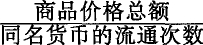

第三章货币或商品流通
1.价值尺度
为了简单起见，我在本书各处都假定金是货币商品。
金的第一个职能是为商品世界提供表现价值的材料，或者说，是把商品价值表现为同名的量，使它们在质的方面相同，在量的方面可以比较。这样，金执行一般的价值尺度的职能，并且首先只是由于这个职能，金这个独特的等价商品才成为货币。
商品并不是由于有了货币才可以通约。恰恰相反。因为一切商品作为价值都是对象化的人类劳动，从而本身可以通约，所以它们能共同用一个独特的商品来计量自己的价值，这样，这个独特的商品就转化为它们共同的价值尺度或货币。货币作为价值尺度，是商品内在的价值尺度即劳动时间的必然表现形式。(1)
商品在金上的价值表现——x量商品A＝y量货币商品——是商品的货币形式或它的价格。现在，要用社会公认的形式表现铁的价值，只要有1吨铁＝2盎司金这样一个等式就够了。这个等式不需要再同其他商品的价值等式排成一个行列，因为金这个等价商品已经具有货币的性质。因此，现在商品的一般相对价值形式又具有商品最初的即简单的或个别的相对价值形式的样子。另一方面，扩大的相对价值表现，或相对价值表现的无限的系列，成为货币商品所特有的相对价值形式。而这个系列现在已经在商品价格中社会地提供了。把一份行情表上的价目倒过来读，就可以看出货币的价值量表现在各式各样的商品上。然而货币并没有价格。货币要参加其他商品的这个统一的相对价值形式，就必须把自己当作自己的等价物。
商品的价格或货币形式，同商品的价值形式本身一样，是一种与商品的可以捉摸的实在的物体形式不同的，因而只是观念的或想象的形式。铁、麻布、小麦等等的价值虽然看不见，但是存在于这些物的本身中；它们的价值通过它们同金相等，同金发生一种可以说只是在它们头脑中作祟的关系而表现出来。因此，商品监护人为了向外界表明商品的价格，必须把自己的舌头塞进它们的脑袋里，或者给它们挂上一张纸条。(2)因为商品在金上的价值表现是观念的，所以要表现商品的价值，也可以仅仅用想象的或观念的金。每一个商品监护人都知道：当他给予商品价值以价格形式或想象的金的形式时，他远没有把自己的商品转化为金，而为了用金估量数百万的商品价值，他不需要丝毫实在的金。因此，货币在执行价值尺度的职能时，只是想象的或观念的货币。这种情况引起了种种最荒谬的学说。(3)尽管只是想象的货币执行价值尺度的职能，但是价格完全取决于实在的货币材料。例如，一吨铁所包含的价值，即人类劳动量，是通过想象中包含等量劳动的货币商品量表现出来的。所以，一吨铁的价值，根据充当价值尺度的是金、银还是铜，就具有完全不同的价格表现，或者说，在金、银或铜的完全不同的数量中表现出来。
因此，如果两个不同的商品，例如金和银，同时充当价值尺度，一切商品就会有两种不同的价格表现，即金价格和银价格；只要金和银的价值比例不变，例如总是1∶15，那么这两种价格就可以安然并存。但是，这种价值比例的任何变动，都会扰乱商品的金价格和银价格之间的比例，这就在事实上证明，价值尺度的二重化是同价值尺度的职能相矛盾的。(4)
凡是价格已经确定的商品都表现为这样的形式：a量商品A＝x量金；b量商品B＝z量金；c量商品C＝y量金，等等，在这里，a，b，c代表商品A，B，C的一定量，x，z，y代表金的一定量。这样，商品价值就转化为大小不同的想象的金量，就是说，尽管商品五花八门，商品价值都转化为同名的量，即金量。这些价值作为这样的不同的金量互相比较，互相计量，这样在技术上就有必要把某一固定的金量作为商品价值的计量单位。这个计量单位本身通过进一步分成等分而发展成为标准。金、银、铜在变成货币以前，在它们的金属重量中就有这种标准，例如，以磅为计量单位，磅一方面分成盎司等等，另一方面又合成英担等等。(5)因此，在一切金属的流通中，原有的重量标准的名称，也是最初的货币标准或价格标准的名称。
作为价值尺度和作为价格标准，货币执行着两种完全不同的职能。作为人类劳动的社会化身，它是价值尺度；作为规定的金属重量，它是价格标准。作为价值尺度，它用来使形形色色的商品的价值转化为价格，转化为想象的金量；作为价格标准，它计量这些金量。价值尺度是用来计量作为价值的商品，相反，价格标准是用一个金量计量各种不同的金量，而不是用一个金量的重量计量另一个金量的价值。要使金充当价格标准，必须把一定重量的金固定为计量单位。在这里，正如在其他一切同名量的尺度规定中一样，尺度比例的固定性有决定的意义。因此，同一个金量越是不变地充当计量单位，价格标准就越是能更好地执行自己的职能。金能够充当价值尺度，只是因为它本身是劳动产品，因而是潜在可变的价值。(6)
首先很明显，金的价值变动丝毫不会妨碍金执行价格标准的职能。不论金的价值怎样变动，不同的金量之间的价值比例总是不变。哪怕金的价值跌落1000%，12盎司金的价值仍然是1盎司金的12倍，在价格上问题只在于不同金量彼此之间的比例。另一方面，因为1盎司金决不会随着它的价值涨落而改变它的重量，所以它也不会因而改变它的等分的重量，这样，不论金的价值怎样变动，金作为固定的价格标准总是起同样的作用。
金的价值变动也不会妨碍金执行价值尺度的职能。这种变动会同时影响一切商品，因此，在其他条件相同的情况下，它们相互间的相对价值不会改变，尽管这些价值这时都是在比过去高或低的金价格中表现出来。
同某一商品的价值用任何另一个商品的使用价值来表现一样，商品用金来估价也只是以下面一点为前提：在一定时间内生产一定量的金要耗费一定量的劳动。至于商品价格本身的变动，前面阐述的简单相对价值表现的规律也是适用的。(7)
商品价格只有在货币价值不变、商品价值提高时，或在商品价值不变、货币价值降低时，才会普遍提高。反之，商品价格只有在货币价值不变、商品价值降低时，或在商品价值不变、货币价值提高时，才会普遍降低。由此决不能得出结论说，货币价值提高，商品价格必定相应降低，货币价值降低，商品价格必定相应提高。这只适用于价值不变的商品。例如，某些商品的价值和货币的价值同时按同一比例提高，这些商品的价格就不会改变。如果这些商品的价值比货币价值增加得慢些或者增加得快些，那么，这些商品的价格的降低或提高，就由这些商品的价值变动和货币的价值变动之间的差额来决定。余此类推。
现在我们回过来考察价格形式。
由于各种原因，金属重量的货币名称同它原来的重量名称逐渐分离。其中在历史上有决定意义的是下列原因：1.外国货币流入较不发达的民族，例如在古罗马，银币和金币最初是作为外国商品流通的。这些外国货币的名称与本地的重量名称是不同的。2.随着财富的增长，不大贵重的金属逐渐为比较贵重的金属所排挤，失去价值尺度的职能。铜为银所排挤，银为金所排挤，尽管这个顺序是同诗人想象的年代顺序[113]相抵触的。(8)例如，镑原来是真正一磅重的银的货币名称。当金排挤作为价值尺度的银时，这个名称就依照金和银的价值比例，可能用来称呼1/15磅的金等等。现在，作为货币名称的镑就和作为金的通常重量名称的磅分开了。(9)3.几百年来君主不断伪造货币，使铸币原来的重量实际上只剩下一个名称。(10)
这些历史过程使金属重量的货币名称同它的通常重量名称的分离成为民族的习惯。因为货币标准一方面纯粹是约定俗成的，另一方面又需要得到公认，所以，最后就由法律来规定了。一定重量的贵金属，如一盎司金，由官方分成若干等分，取得法定的教名，如镑、塔勒等等。这种等分成为真正的货币计量单位后，又分为新的等分，后者也具有法定的教名，如先令、便士等等。(11)一定的金属重量仍旧是金属货币的标准。改变的只是分法和名称。
因此，价格或商品价值在观念上转化成的金量，现在用金标准的货币名称或法定的计算名称来表现了。于是英国人不说1夸特小麦等于1盎司金，而说等于3镑17先令10(1/2)便士。这样，商品就用自己的货币名称说明自己值多少，每当需要把一物当作价值，从而用货币形式来确定时，货币就充当计算货币。(12)
物的名称对于物的本性来说完全是外在的。即使我知道一个人的名字叫雅各，我对他还是一点不了解。同样，在镑、塔勒、法郎、杜卡特等货币名称上，价值关系的任何痕迹都消失了。由于货币名称既表示商品价值，同时又表示某一金属重量即货币标准的等分，对这些神秘记号的秘密含义的了解就更加混乱了。(13)另一方面，价值和商品世界的形形色色的物体不同，必然发展为这种没有概念的物的而又纯粹是社会的形式。(14)
价格是对象化在商品内的劳动的货币名称。因此，说商品同被称为它的价格的那个货币量等价，不过是同义反复，因为一个商品的相对价值表现总是两个商品等价的表现。(15)虽然价格作为商品价值量的指数，是商品同货币的交换比例的指数，但不能由此反过来说，商品同货币的交换比例的指数必然是商品价值量的指数。假定等量的社会必要劳动表现为1夸特小麦和2镑（约1/2盎司金）。2镑是1夸特小麦的价值量的货币表现或1夸特小麦的价格。如果情况许可把1夸特小麦标价为3镑，或者迫使把它标价为1镑，那么作为小麦的价值量的表现，1镑是太少了，3镑是太多了。但是1镑和3镑都是小麦的价格，因为第一，它们是小麦的价值形式，是货币；第二，它们是小麦同货币的交换比例的指数。在生产条件不变或者劳动生产力不变的情况下，再生产1夸特小麦仍需要耗费同样多的社会劳动时间。这一事实既不以小麦生产者的意志为转移，也不以其他商品占有者的意志为转移。因而，商品的价值量表现出一种必然的、商品形成过程内在的同社会劳动时间的关系。随着价值量转化为价格，这种必然的关系就表现为商品同在它之外存在的货币商品的交换比例。这种交换比例既可以表现商品的价值量，也可以表现比它大或小的量，在一定条件下，商品就是按这种较大或较小的量来让渡的。可见，价格和价值量之间的量的不一致的可能性，或者价格偏离价值量的可能性，已经包含在价格形式本身中。但这并不是这种形式的缺点，相反地，却使这种形式成为这样一种生产方式的适当形式，在这种生产方式下，规则只能作为没有规则性的盲目起作用的平均数规律来为自己开辟道路。
价格形式不仅可能引起价值量和价格之间即价值量和它自身的货币表现之间的量的不一致，而且能够包藏一个质的矛盾，以致货币虽然只是商品的价值形式，但价格可以完全不是价值的表现。有些东西本身并不是商品，例如良心、名誉等等，但是也可以被它们的占有者出卖以换取金钱，并通过它们的价格，取得商品形式。因此，没有价值的东西在形式上可以具有价格。在这里，价格表现是虚幻的，就像数学中的某些数量一样。另一方面，虚幻的价格形式——如未开垦的土地的价格，这种土地没有价值，因为没有人类劳动对象化在里面——又能掩盖实在的价值关系或由此派生的关系。
同相对价值形式本身一样，价格通过下列方式来表现一种商品如一吨铁的价值：一定量的等价物，如一盎司金，能直接与铁交换。但决不能反过来说，铁也能直接与金交换。因此，商品要实际上起交换价值的作用，就必须抛弃自己的自然形体，从只是想象的金转化为实在的金，诚然，商品实现这种变体，同黑格尔的“概念”实现由必然到自由的过渡[117]相比，同龙虾脱壳相比，同教父圣哲罗姆(16)解脱原罪相比，是“更为困难的”。商品除了有例如铁这种实在的形态以外，还可以在价格上有观念的价值形态或想象的金的形态，但它不能同时既是实在的铁，又是实在的金。要规定商品的价格，只需要使想象的金同商品相等。但商品必须为金所代替，它才能对它的占有者起一般等价物的作用。例如，铁的占有者遇见某种享乐商品的占有者，向后者说铁的价格已经是货币形式了，后者就会像圣彼得在天堂听了但丁讲述信仰要义之后那样回答说：
“这个铸币经过检验，重量成色完全合格，但告诉我，你钱袋里有吗？”[119]
价格形式包含着商品为取得货币而让渡的可能性和这种让渡的必要性。另一方面，金所以充当观念的价值尺度，只是因为它在交换过程中已作为货币商品流通。因此，在观念的价值尺度中隐藏着坚硬的货币。
2.流通手段
（a）商品的形态变化
我们看到，商品的交换过程包含着矛盾的和互相排斥的关系。(17)商品的发展并没有扬弃这些矛盾，而是创造这些矛盾能在其中运动的形式。一般说来，这就是实际矛盾赖以得到解决的方法。例如，一个物体不断落向另一个物体而又不断离开这一物体，这是一个矛盾。椭圆便是这个矛盾借以实现和解决的运动形式之一。
交换过程使商品从把它们当作非使用价值的人手里转到把它们当作使用价值的人手里，就这一点说，这个过程是一种社会的物质变换。一种有用劳动方式的产品代替另一种有用劳动方式的产品。商品一旦到达它充当使用价值的地方，就从商品交换领域转入消费领域。在这里，我们感兴趣的只是商品交换领域。因此，我们只是从形式方面考察全部过程，就是说，只是考察对社会的物质变换起中介作用的商品形式变换或商品形态变化。
人们对这种形式变换之所以理解得很差，除了对价值概念本身不清楚以外，是因为一个商品的每次形式变换都是通过两个商品即一个普通商品和货币商品的交换实现的。如果我们只注意商品和金的交换这个物质因素，那就会恰恰看不到应该看到的东西，即形式发生了怎样的变化。我们就会看不到：金作为单纯的商品并不是货币，而其他的商品通过它们的价格才把金当作它们自己的货币形态。
商品首先是没有镀金，没有蘸糖，以本来面目进入交换过程的。交换过程造成了商品分为商品和货币这种二重化，即造成了商品得以表现自己的使用价值和价值之间的内在对立的一种外部对立。在这种外部对立中，作为使用价值的商品同作为交换价值的货币对立着。另一方面，对立的双方都是商品，也就是说，都是使用价值和价值的统一。但这种差别的统一按相反的方向表现在两极中的每一极上，并且由此同时表现出它们的相互关系。商品实际上是使用价值，它的价值存在只是观念地表现在价格上，价格使商品同对立着的金发生关系，把金当作自己的实际的价值形态。反之，金这种物质只是充当价值的化身，充当货币。因此金实际上是交换价值。金的使用价值只是观念地表现在相对价值表现的系列上，金通过这个相对价值表现的系列，同对立着的商品发生关系，把它们当作自己的实际使用形态的总和。商品的这些对立的形式就是它们的交换过程的实际的运动形式。
现在，我们随同任何一个商品占有者，比如我们的老朋友织麻布者，到交换过程的舞台上去，到商品市场上去。他的商品即20码麻布的价格是规定了的。它的价格是2镑。他把麻布换成2镑，接着，这个守旧的人又用这2镑换一本价格相等的家庭用的圣经。麻布——对于他来说只是商品，只是价值承担者——被转让出去，换取了金，麻布的价值形态，然后又从这个价值形态被让渡出去，换取了另一种商品圣经，而圣经就作为使用物品来到织布者的家里，满足他受教化的需要。可见，商品交换过程是在两个互相对立、互为补充的形态变化中完成的：从商品转化为货币，又从货币转化为商品。(18)商品形态变化的两个因素同时就是商品占有者的两种行为，一种是卖，把商品换成货币，一种是买，把货币换成商品，这两种行为的统一就是：为买而卖。
如果织麻布者看看交易的最终结果，那么现在他占有的不是麻布，而是圣经，不是他原来的商品，而是另外一种价值相等而用处不同的商品。他用同样的方法取得他的其他生活资料和生产资料。在他看来，全部过程不过是他的劳动产品同别人的劳动产品进行交换的中介，是产品交换的中介。
因此，商品的交换过程是在下列的形式变换中完成的：
商品—货币—商品
W—G—W
从物质内容来说，这个运动是W—W，是商品换商品，是社会劳动的物质变换，这种物质变换的结果一经达到，过程本身也就结束。
W—G。商品的第一形态变化或卖。商品价值从商品体跳到金体上，像我在别处说过的[121]，是商品的惊险的跳跃。这个跳跃如果不成功，摔坏的不是商品，但一定是商品占有者。社会分工使商品占有者的劳动成为单方面的，又使他的需要成为多方面的。正因为这样，他的产品对他来说仅仅是交换价值。这个产品只有在货币上，才取得一般的社会公认的等价形式，而货币又在别人的口袋里。为了把货币吸引出来，商品首先应当对于货币占有者是使用价值，就是说，用在商品上的劳动应当是以社会有用的形式耗费的，或者说，应当证明自己是社会分工的一部分。但分工是自然形成的生产有机体，它的纤维在商品生产者的背后交织在一起，而且继续交织下去。商品可能是一种新的劳动方式的产品，它声称要去满足一种新产生的需要，或者想靠它自己去唤起一种需要。一种特殊的劳动操作，昨天还是同一个商品生产者许多职能中的一种职能，今天就可能脱离这种联系，独立起来，从而把它的局部产品当作独立商品送到市场上去。这个分离过程的条件可能已经成熟，或者可能尚未成熟。某种产品今天满足一种社会需要，明天就可能全部地或部分地被一种类似的产品排挤掉。即使某种劳动，例如我们这位织麻布者的劳动，是社会分工的特许的一部分，这也决不能恰好使他的20码麻布的使用价值得到了保证。社会对麻布的需要，像对其他各种东西的需要一样，是有限度的，如果他的竞争者已经满足了这种需要，我们这位朋友的产品就成为多余的、过剩的，因而是无用的了。接受赠马，不看岁口[122]，但是我们这位织麻布者决不是到市场去送礼的。我们就假定他的产品的使用价值得到了证明，因而商品会把货币吸引出来。但现在要问：它能吸引多少货币呢？当然，答案已经由商品的价格即商品价值量的指数预示了。我们把商品占有者可能发生的纯粹主观的计算错误撇开，因为这种错误在市场上马上可以得到客观的纠正。假定他耗费在他的产品上的只是平均社会必要劳动时间。因此，商品的价格只是对象化在商品中的社会劳动量的货币名称。但是，织麻布业的以往可靠的生产条件，没有经过我们这位织麻布者的许可而在他的背后发生了变化。同样多的劳动时间，昨天还确实是生产一码麻布的社会必要劳动时间，今天就不是了。货币占有者会非常热心地用我们这位朋友的各个竞争者定出的价格来说明这一点。我们这位朋友真是不幸，世上竟有很多织麻布者。最后，假定市场上的每一块麻布都只包含社会必要劳动时间。即使这样，这些麻布的总数所包含的已耗费的劳动时间仍然可能过多。如果市场的胃口不能以每码2先令的正常价格吞下麻布的总量，这就证明，在全部社会劳动时间中，以织麻布的形式耗费的时间太多了。其结果就像每一个织布者花在他个人的产品上的时间都超过了社会必要劳动时间一样。这正像俗话所说：“一起捉住，一起绞死。”(19)在市场上，全部麻布只是当作一个商品，每一块麻布只是当作这个商品的相应部分。事实上，每一码的价值也只是同种人类劳动的同一的社会规定的量的化身。[123]
我们看到，商品爱货币，但是“真爱情的道路决不是平坦的”[124]。把自己的“分散的肢体”[125]表现为分工体系的社会生产有机体，它的量的构成，也像它的质的构成一样，是自发地偶然地形成的。所以我们的商品占有者发现：分工使他们成为独立的私人生产者，同时又使社会生产过程以及他们在这个过程中的关系不受他们自己支配；人与人的互相独立为物与物的全面依赖的体系所补充。
分工使劳动产品转化为商品，因而使它转化为货币成为必然的事情。同时，分工使这种转化能否成功成为偶然的事情。但是在这里应当纯粹地考察现象，因此假定这种现象是正常进行的。其实，只要这种现象发生，就是说，只要商品不是卖不出去，就总会发生商品的形式变换，尽管在这种形式变换中，实体——价值量——可能在不正常的场合亏损或增加。
对一个商品占有者来说，金代替了他的商品，对另一个商品占有者来说，商品代替了他的金。可以感觉到的现象是商品和金，即20码麻布和2镑转手了，换位了，就是说，交换了。但是商品同什么交换呢？同它自己的一般价值形态交换。金又同什么交换呢？同它的使用价值的一种特殊形态交换。金为什么作为货币同麻布对立呢？因为麻布的价格2镑或它的货币名称，已经使麻布同作为货币的金发生关系。原来的商品形式的转换是通过商品的让渡完成的，就是说，是在商品的使用价值确实把商品价格中只是想象的金吸引出来的时刻完成的。因此，商品价格的实现，或商品的仅仅是观念的价值形式的实现，同时就是货币的仅仅是观念的使用价值的实现。商品转化为货币，同时就是货币转化为商品。这一个过程是两方面的：从商品占有者这一极看，是卖；从货币占有者这另一极看，是买。或者说，卖就是买，W—G同时就是G—W。(20)
到这里，我们还只知道人与人之间的一种经济关系，即商品占有者之间的关系，在这种关系中，商品占有者只是由于让出自己的劳动产品，才占有别人的劳动产品。因此，一个商品占有者所以能够作为货币占有者同另一个商品占有者对立，或者是因为他的劳动产品天然具有货币形式，是货币材料，是金等等；或者是因为他自己的商品已经蜕皮，已经蜕掉它原来的使用形式。金要执行货币的职能，自然就必须在某个地点进入商品市场。这个地点就在金的产地，在那里，金作为直接的劳动产品与另一种价值相同的劳动产品相交换。但是，从这个时候起，它就总是代表已经实现了的商品价格。(21)撇开金在产地同商品的交换不说，金在每个商品占有者手里都是他所让渡的商品的转换形态，都是卖的产物，或商品第一形态变化W—G的产物。(22)金成为观念的货币或价值尺度，是因为一切商品都用金来计量它们的价值，从而使金成为它们的使用形态的想象的对立面，成为它们的价值形态。金成为实在的货币，是因为商品通过它们的全面让渡使金成为它们的实际转换或转化的使用形态，从而使金成为它们的实际的价值形态。商品在它的价值形态上蜕掉了它的自然形成的使用价值的一切痕迹，蜕掉了创造它的那种特殊有用劳动的一切痕迹，蛹化为无差别的人类劳动的同样的社会化身。因此，从货币上看不出它是由哪种商品转化来的。在货币形式上，一种商品和另一种商品完全一样。因此，货币可以是粪土，虽然粪土并不是货币。假定我们的织麻布者让渡他的商品而取得的两个金币是一夸特小麦的转化形态。卖麻布W—G同时就是买麻布G—W。作为卖麻布，这个过程开始了一个运动，而这个运动是以卖的对立面，以买圣经结束的；作为买麻布，这个过程结束了一个运动，而这个运动是以买的对立面，以卖小麦开始的。W—G（麻布—货币），即W—G—W（麻布—货币—圣经）这一运动的始段，同时就是G—W（货币—麻布），即另一运动W—G—W（小麦—货币—麻布）的终段。一个商品的第一形态变化，即从商品形式转化为货币，同时总是另一个商品的相反的第二形态变化，即从货币形式又转化为商品。(23)
G—W。商品的第二形态变化，或最终的形态变化：买。因为货币是其他一切商品的转换形态，或者说，是它们普遍让渡的产物，所以它是绝对可以让渡的商品。货币把一切价格倒过来读，从而把自己反映在一切商品体上，即为货币本身变成商品而献身的材料上。同时，价格，即商品向货币送去的秋波，表明货币的转化能力的限度，即表明货币本身的量。因为商品在变成货币后就消失了，所以，从货币上就看不出它究竟怎样落到货币占有者的手中，究竟是由什么东西转化来的。货币没有臭味[127]，无论它从哪里来。一方面，它代表已经卖掉的商品，另一方面，它代表可以买到的商品。(24)
G—W，即买，同时就是卖，即W—G；因此，一个商品的后一形态变化，同时就是另一商品的前一形态变化。对我们的织麻布者来说，他的商品的生命旅程是以他把2镑又转化为圣经而结束的。卖圣经的人则把从织麻布者那里得到的2镑换成烧酒。G—W，即W—G—W（麻布—货币—圣经）的终段，同时就是W—G，即W—G—W（圣经—货币—烧酒）的始段。因为商品生产者只提供一种单方面的产品，所以他常常是大批地卖，而他的多方面的需要，又迫使他不断地把已经实现的价格，或得到的全部货币额，分散在许多次买上。因此，卖一次就要买许多次各种各样的商品。这样，一个商品的最终的形态变化，就是许多其他商品的第一形态变化的总和。
如果我们来考察一个商品例如麻布的总形态变化，那么我们首先就会看到，这个形态变化由两个互相对立、互为补充的运动W—G和G—W组成。商品的这两个对立的转化是通过商品占有者的两个对立的社会过程完成的，并反映在商品占有者充当的两种对立的经济角色上。作为卖的当事人，他是卖者，作为买的当事人，他是买者。但是，在商品的每一次转化中，商品的两种形式即商品形式和货币形式同时存在着，只不过是在对立的两极上，所以，对同一个商品占有者来说，当他是卖者时，有一个买者和他对立着，当他是买者时，有一个卖者和他对立着。正像同一个商品要依次经过两个相反的转化，由商品变为货币，由货币变为商品一样，同一个商品占有者也要由卖者的角色转换为买者的角色。可见，这两种角色不是固定的，而是在商品流通中经常由人们交替扮演的。
一个商品的总形态变化，在其最简单的形式上，包含四个极和三个登场人物。最先，与商品对立着的是作为它的价值形态的货币，而后者在彼岸，在别人的口袋里，具有物的坚硬的现实性。因此，与商品占有者对立着的是货币占有者。商品一旦转化为货币，货币就成为商品的转瞬即逝的等价形式，这个等价形式的使用价值或内容在此岸，在其他的商品体中存在着。作为商品第一个转化的终点的货币，同时是第二个转化的起点。可见，在第一幕是卖者，在第二幕就成了买者，这里又有第三个商品占有者作为卖者同他对立着。(25)
商品形态变化的两个相反的运动阶段组成一个循环：商品形式，商品形式的抛弃，商品形式的复归。当然，在这里，商品本身具有对立的规定。对它的占有者来说，它在起点是非使用价值，在终点是使用价值。同样，货币先表现为商品转化成的固定的价值结晶，然后又作为商品的单纯等价形式而消失。
组成一个商品的循环的两个形态变化，同时是其他两个商品的相反的局部形态变化。同一个商品（麻布）开始它自己的形态变化的系列，又结束另一个商品（小麦）的总形态变化。商品在它的第一个转化中，即在出卖时，一身扮演这两种角色。而当它作为金蛹结束自己的生涯的时候，它同时又结束第三个商品的第一形态变化。可见，每个商品的形态变化系列所形成的循环，同其他商品的循环不可分割地交错在一起。这全部过程就表现为商品流通。
商品流通不仅在形式上，而且在实质上不同于直接的产品交换。让我们回顾一下上面说过的过程。织麻布者确实拿麻布换了圣经，拿自己的商品换了别人的商品。但这种现象只有对于他才是真实的。宁愿要生暖的饮料而不要冰冷的圣物的圣经出卖者，不会想到麻布换他的圣经，正像织麻布者不会想到小麦换他的麻布一样，如此等等。B的商品替换了A的商品，但A和B并不是互相交换自己的商品。A同B彼此购买的事，实际上也可能发生，但这种特殊关系决不是由商品流通的一般条件引起的。在这里，一方面，我们看到，商品交换怎样打破了直接的产品交换的个人的和地方的限制，发展了人类劳动的物质变换。另一方面，整整一系列不受当事人控制的天然的社会联系发展起来了。织布者能卖出麻布，只是因为农民已经卖了小麦；嗜酒者能卖出圣经，只是因为织布者已经卖了麻布；酿酒者能卖出酿造之水，只是因为另一个人已经卖了永生之水[128]，如此等等。
因此，与直接的产品交换不同，流通过程在使用价值换位和转手之后并没有结束。货币并不因为它最终从一个商品的形态变化系列中退出来而消失。它不断地沉淀在商品空出来的流通位置上。例如，在麻布的总形态变化即麻布—货币—圣经中，先是麻布退出流通，货币补上它的位置，然后是圣经退出流通，货币又补上圣经的位置。一个商品由另一个商品代替，而货币商品留在第三人手中。(26)流通不断地把货币像汗一样渗出来。
有一种最愚蠢不过的教条：商品流通必然造成买和卖的平衡，因为每一次卖同时就是买，反过来也是一样。如果这是指实际完成的卖的次数等于买的次数，那是毫无意义的同义反复。但这种教条是要证明，卖者会把自己的买者带到市场上来。作为两极对立的两个人即商品占有者和货币占有者的相互关系，卖和买是同一个行为。但作为同一个人的活动，卖和买是两极对立的两个行为。因此，卖和买的同一性包含着这样的意思：如果商品被投入流通的炼金炉，没有炼出货币，没有被商品占有者卖掉，也就是没有被货币占有者买去，商品就会变成无用的东西。这种同一性还包含这样的意思：如果这个过程成功，它就会形成商品的一个休止点，形成商品生命中的一个时期，而这个时期可长可短。既然商品的第一形态变化是卖又是买，这个局部过程同时就是一个独立的过程。买者有商品，卖者有货币，也就是有一种不管早一些或晚一些再进入市场都保持着能够流通的形式的商品。没有人买，也就没有人能卖。但谁也不会因为自己已经卖，就得马上买。流通所以能够打破产品交换的时间、空间和个人的限制，正是因为它把这里存在的换出自己的劳动产品和换进别人的劳动产品这二者之间的直接的同一性，分裂成卖和买这二者之间的对立。说互相对立的独立过程形成内部的统一，那也就是说，它们的内部统一是运动于外部的对立中。当内部不独立（因为互相补充）的过程的外部独立化达到一定程度时，统一就要强制地通过危机显示出来。商品内在的使用价值和价值的对立，私人劳动同时必须表现为直接社会劳动的对立，特殊的具体的劳动同时只是当作抽象的一般的劳动的对立，物的人格化和人格的物化的对立，——这种内在的矛盾在商品形态变化的对立中取得发展了的运动形式。因此，这些形式包含着危机的可能性，但仅仅是可能性。这种可能性要发展为现实，必须有整整一系列的关系，从简单商品流通的观点来看，这些关系还根本不存在。(27)
作为商品流通的中介，货币取得了流通手段的职能。
（b）货币的流通
劳动产品的物质变换借以完成的形式变换W—G—W，要求同一个价值作为商品成为过程的起点，然后又作为商品回到这一点。因此，商品的这种运动就是循环。另一方面，这个形式又排斥货币的循环。其结果是货币不断地离开它的起点，不再回来。只要卖者还紧紧握着他的商品的转化形态即货币，这个商品就仍然处在第一形态变化的阶段，或者说，只通过了流通的前半段。如果为买而卖的过程已经完成，货币就会再从它原来的占有者手里离开。当然，如果织麻布者买了圣经之后再卖麻布，货币就会再回到他的手里。但货币返回来，并不是由于上次那20码麻布的流通，相反地，那次流通已经使货币从织麻布者的手里离开，而到了圣经出售者的手里。货币返回来，只是由于新的商品重新进行或重复同样的流通过程，并且这次的结果和上次相同。因此，商品流通直接赋予货币的运动形式，就是货币不断地离开起点，就是货币从一个商品占有者手里转到另一个商品占有者手里，或者说，就是货币流通（currency，cours de la monnaie）。
货币流通表示同一个过程的不断的、单调的重复。商品总是在卖者方面，货币总是作为购买手段在买者方面。货币作为购买手段执行职能，是在它实现商品的价格的时候。而货币在实现商品的价格的时候，把商品从卖者手里转到买者手里，同时自己也从买者手里离开，到了卖者手里，以便再去同另一个商品重复同样的过程。货币运动的单方面形式来源于商品运动的两方面形式，这一点是被掩盖着的。商品流通的性质本身造成了相反的外观。商品的第一形态变化表现出来的不仅是货币的运动，而且是商品本身的运动；而商品的第二形态变化表现出来的只是货币的运动。商品在流通的前半段同货币换了位置。同时，它的使用形态便离开流通，进入消费。(28)它的位置由它的价值形态或货币化装所占据。商品不再是包在它自己的天然外皮中，而是包在金外皮中来通过流通的后半段。因此，运动的连续性完全落在货币方面；这个运动对商品来说包含两个对立的过程，但作为货币本身的运动却总是包含同一个过程，就是货币同一个又一个的商品交换位置。因此，商品流通的结果，即一个商品被另一个商品所代替，似乎不是由商品本身的形式变换引起的，而是由货币作为流通手段的职能引起的，似乎正是作为流通手段的货币使本身不能运动的商品流通起来，使商品从把它们当作非使用价值的人手里转到把它们当作使用价值的人手里，并且总是朝着同货币本身运动相反的方向运动。货币不断使商品离开流通领域，同时不断去占据商品在流通中的位置，从而不断离开自己的起点。因此，虽然货币运动只是商品流通的表现，但看起来商品流通反而只是货币运动的结果。(29)
另一方面，货币所以具有流通手段的职能，只因为货币是商品的独立出来的价值。因此，货币作为流通手段的运动，实际上只是商品本身的形式的运动。因而这种运动也必然明显地反映在货币流通上。例如，麻布就是先把它的商品形式转化为它的货币形式。然后它的第一形态变化W—G的终极，即货币形式，成为它的第二形态变化G—W（即再转化为圣经）的始极。但这两个形式变换的每一个都是通过商品和货币的交换，通过二者互相变换位置而实现的。同一些货币作为商品的转换形态来到卖者手里，然后又作为商品的绝对可以让渡的形态从他的手里离开。这些货币变换位置两次。麻布的第一形态变化使这些货币进入织布者的口袋里，麻布的第二形态变化又使这些货币从那里出来。这样，同一个商品的两个互相对立的形式变换就反映在货币的两次方向相反的位置变换上。
反之，如果只有单方面的商品形态变化，不论单是卖或单是买，这个货币就只变换位置一次。货币的第二次位置变换总是表明商品的第二次形态变化，表明又由货币转化为商品。同一些货币反复不断地变换位置，不仅反映一个商品的形态变化的系列，而且反映整个商品世界的无数形态变化的交错联系。不言而喻，这一切只适合于这里所考察的简单商品流通形式。
每一个商品在流通中走第一步，即进行第一次形式变换，就退出流通，而总有新的商品进入流通。相反，货币作为流通手段却不断地留在流通领域，不断地在那里流动。于是产生了一个问题，究竟有多少货币不断地被流通领域吸收。
在一个国家里，每天都发生大量的、同时发生的、因而在空间上并行的单方面的商品形态变化，换句话说，一方面单是卖，另一方面单是买。商品在自己的价格上已经等于一定的想象的货币量。因为这里所考察的直接的流通形式总是使商品和货币作为物体彼此对立着，商品在卖的一极，货币在买的一极，所以，商品世界的流通过程所需要的流通手段量，已经由商品的价格总额决定了。事实上，货币不过是把已经在商品价格总额中观念地表现出来的金额实在地表现出来。因此，这两个数额相等是不言而喻的。但是我们知道，在商品价值不变的情况下，商品的价格会同金（货币材料）本身的价值一起变动，金的价值降低，商品的价格会相应地提高；金的价值提高，商品的价格会相应地降低(30)。随着商品价格总额这样增加或减少，流通的货币量必须以同一程度增加或减少。诚然，在这里，流通手段量的变化都是由货币本身引起的，但不是由它作为流通手段的职能，而是由它作为价值尺度的职能引起的。先是商品价格同货币价值成反比例地变化，然后是流通手段量同商品价格成正比例地变化。比如说，如果不是金的价值降低，而是银代替金充当价值尺度，或者不是银的价值提高，而是金使银失去价值尺度的职能，那也会发生完全相同的现象。在前一种情况下，流通的银要比以前的金多，在后一种情况下流通的金要比以前的银少。在这两种情况下，货币材料的价值，即执行价值尺度的职能的商品的价值都改变了，因此，商品价值的价格表现也会改变，实现这些价格的流通货币量也会改变。我们已经知道商品流通领域有一个口，金（或银，总之，货币材料）是作为具有一定价值的商品，从这个口进入流通领域的。(31)这个价值在货币执行价值尺度的职能时，即在决定价格时，是作为前提而存在的。比如说，如果价值尺度本身的价值降低了，那么，这首先会在贵金属产地直接同作为商品的贵金属交换的那些商品的价格变化中表现出来。而很大一部分其他商品会在一个较长的时期继续按照价值尺度的已变得虚幻的旧有的价值来估价，特别在资产阶级社会还不太发展的阶段是这样。可是，通过商品间的价值关系，一个商品会影响另一个商品于是这些商品的金价格或银价格会逐渐同商品价值本身所决定的比例趋于一致，直到最后所有的商品价值都相应地根据货币金属的新价值来估价。随着这个趋于一致的过程，贵金属不断增加，它们是由于代替那些直接同它们交换的商品而流进来的。因此，商品改订价格普遍到什么程度，或者说，商品的价值根据金属已经跌落并继续跌落到一定点的新价值来估价达到什么程度，实现商品价值所需要的贵金属数量也已经增加到同样的程度了。由于对发现新的金银矿以后出现的事实作了片面的考察，在17世纪，特别是在18世纪，有人得出了错误的结论，以为商品价格上涨是因为有更多的金银作为流通手段执行了职能。下面假设金的价值是既定的，实际上在估量价格的一瞬间，金的价值确实也是既定的。
所以，在这种前提下，流通手段量决定于待实现的商品价格总额。如果我们再假设每一种商品的价格都是既定的，显然，商品价格总额就决定于流通中的商品量。只要稍微动一下脑筋就可以知道，1夸特小麦要是值2镑，100夸特就值200镑，200夸特就值400镑，等等，因此，在小麦出售时与小麦换位的货币量必须同小麦量一起增加。
假设商品量已定，流通货币量就随着商品价格的波动而增减。流通货币量之所以增减，是因为商品的价格总额随着商品价格的变动而增减。为此，完全不需要所有商品的价格同时上涨或跌落。只要若干主要商品的价格在一种情况下上涨，或在另一种情况下跌落，就足以提高或降低全部流通商品的待实现的价格总额，从而使进入流通的货币增加或减少。无论商品价格的变动是反映实际的价值变动，或只是反映市场价格的波动，流通手段量所受的影响都是相同的。
假定有若干互不相干的、同时发生的、因而在空间上并行的卖，或者说局部形态变化，例如有1夸特小麦、20码麻布、1本圣经、4加仑烧酒同时出售。如果每种商品的价格都是2镑，待实现的价格总额就是8镑，那么进入流通的货币量必须是8镑。相反，如果这4种商品是我们上面所说过的形态变化系列的各个环节，即1夸特小麦—2镑—20码麻布—2镑—1本圣经—2镑—4加仑烧酒—2镑，那么，有2镑就可以使所有这些商品依次流通，因为它依次实现它们的价格，从而实现8镑的价格总额，最后停留在酿酒者手中。这2镑完成了4次流通。同一些货币的这种反复的位置变换既表示商品发生双重的形式变换，表示商品通过两个对立的流通阶段的运动，也表示各种商品的形态变化交错在一起。(32)这个过程经过的各个互相对立、互为补充的阶段，不可能在空间上并行，只能在时间上相继发生。因此，时间就成为计量这个过程久暂的尺度，或者说，同一些货币在一定时间内的流通次数可以用来计量货币流通的速度。例如，假定上述4种商品的流通过程持续1天。这样，待实现的价格总额为8镑，同一些货币1天的流通次数是4次，流通的货币量是2镑，或者就一定时间的流通过程来说是：＝执行流通手段职能的货币量。这个规律是普遍适用的。在一定的时间内，一个国家的流通过程包括两方面：一方面是许多分散的、同时发生的和空间上并行的卖（或买）或局部形态变化，其中同一些货币只变换位置一次或只流通一次；另一方面是许多部分互相平行，部分互相交错的具有多少不等的环节的形态变化系列，其中同一些货币流通的次数多少不等。但是，从流通中的全部同名货币的总流通次数中可以得出每个货币的平均流通次数或货币流通的平均速度。例如，在每天流通过程开始时进入流通的货币量，当然由同时地和空间上并行地流通着的商品的价格总额来决定。但在过程之内，可以说每一货币都对另一货币承担责任。如果一个货币加快流通速度，另一个货币就会放慢流通速度，甚至完全退出流通领域，因为流通领域只能吸收这样一个金量，这个金量乘以它的单个元素的平均流通次数，等于待实现的价格总额。因此，货币的流通次数增加，流通的货币量就会减少。货币的流通次数减少，货币量就会增加。因为在平均流通速度一定时，能够执行流通手段职能的货币量也是一定的，所以，例如只要把一定量1镑的钞票投入流通，就可以从流通中取回等量的索维林，——这是一切银行都很熟悉的手法。
既然货币流通只是表现商品流通过程，即商品通过互相对立的形态变化而实现的循环，那么货币流通的速度也就表现商品形式变换的速度，表现形态变化系列的不断交错，表现物质变换的迅速，表现商品迅速退出流通领域并同样迅速地为新商品所代替。因此，货币流通的迅速表现互相对立、互为补充的阶段——由使用形态转化为价值形态，再由价值形态转化为使用形态——的流水般的统一，即卖和买两个过程的流水般的统一。相反，货币流通的缓慢则表现这两个过程分离成互相对立的独立阶段，表现形式变换的停滞，从而表现物质变换的停滞。至于这种停滞由什么产生，从流通本身当然看不出来。流通只是表示出这种现象本身。一般人在货币流通迟缓时看到货币在流通领域各点上出没的次数减少，就很容易用流通手段量不足来解释这种现象。(33)
可见，在每一段时期内执行流通手段职能的货币的总量，一方面取决于流通的商品世界的价格总额，另一方面取决于这个商品世界的互相对立的流通过程流动的快慢，这种流动决定着同一些货币能够实现价格总额的多大部分。但是，商品的价格总额又决定于每种商品的数量和价格。这三个因素，即价格的变动、流通的商品量、货币的流通速度，可能按不同的方向和不同的比例变动，因此，待实现的价格总额以及受价格总额制约的流通手段量，也可能有多种多样的组合。在这里，我们只举出商品价格史上最重要的几种组合。
在商品价格不变时，由于流通商品量增加，或者货币流通速度减低，或者这两种情况同时发生，流通手段量就会增加。反之，由于商品量减少，或者货币流通速度增加，流通手段量就会减少。
在商品价格普遍提高时，如果流通商品量的减少同商品价格的上涨保持相同的比例，或流通的商品量不变，而货币流通速度的增加同价格的上涨一样迅速，流通手段量就会不变。如果商品量的减少或货币流通速度的增加比价格的上涨更迅速，流通手段量就会减少。
在商品价格普遍下降时，如果商品量的增加同商品价格的跌落保持相同的比例，或货币流通速度的减低同价格的跌落保持相同的比例，流通手段量就会依然不变。如果商品量的增加或货币流通速度的减低比商品价格的跌落更迅速，流通手段量就会增加。
各种因素的变动可以互相抵消，所以尽管这些因素不断变动，待实现的商品价格总额，从而流通的货币量可以依然不变。因此，特别是考察一个较长的时期，我们就会发现：在每一国家中流通的货币量的平均水平比我们根据表面现象所预料的要稳定得多；除了周期地由生产危机和商业危机引起的，以及偶尔由货币价值本身的变动引起的强烈震动时期以外，流通的货币量偏离这一平均水平的程度，比我们根据表面现象所预料的要小得多。
流通手段量决定于流通商品的价格总额和货币流通的平均速度这一规律(34)，还可以表述如下：已知商品价值总额和商品形态变化的平均速度，流通货币量或货币材料量决定于货币本身的价值。有一种错觉，认为情况恰恰相反，即商品价格决定于流通手段量，而流通手段量又决定于一个国家现有的货币材料量(35)，这种错觉在它的最初的代表者那里是建立在下面这个荒谬的假设上的：在进入流通过程时，商品没有价格，货币也没有价值，然后在这个过程内，商品堆的一个可除部分同金属堆的一个可除部分相交换。(36)
（c）铸币。价值符号
从货币作为流通手段的职能中产生出货币的铸币形式。在商品的价格或货币名称中想象地表现出来的金重量，必须在流通中作为同名的金块或铸币同商品相对立。正像确立价格标准一样，铸造硬币也是国家的事。金银作为铸币穿着不同的国家制服，但它们在世界市场上又脱掉这些制服。这就表明，商品流通的国内领域或民族领域，同它们的普遍的世界市场领域是分开的。
因此，金币和金块本来只有形状上的差别，金始终能从一种形式转化为另一种形式。(37)它离开造币厂的道路，同时就是通向熔炉的道路。这是因为金币在流通中受到磨损，有的磨损得多，有的磨损得少。金的名称和金的实体，名义含量和实际含量，开始了它们的分离过程。同名的金币具有了不同的价值，因为重量不同了。作为流通手段的金同作为价格标准的金偏离了，因此，金在实现商品的价格时不再是该商品的真正等价物。中世纪和直到18世纪为止的近代的铸币史就是一部这样混乱的历史。流通过程的自然倾向是要把铸币的金存在转化为金假象，或把铸币转化为它的法定金属含量的象征。这种倾向甚至为现代的法律所承认，这些法律规定，金币磨损到一定程度，便不能通用，失去通货资格。
既然货币流通本身使铸币的实际含量同名义含量分离，使铸币的金属存在同它的职能存在分离，那么在货币流通中就隐藏着一种可能性：可以用其他材料做的记号或用象征来代替金属货币执行铸币的职能。铸造重量极小的金币或银币在技术上有困难，而且起初是较贱的金属而不是较贵的金属（是银不是金，是铜不是银）充当价值尺度，因而在它们被较贵的金属赶下宝座之前曾一直作为货币流通，这些事实历史地说明了银记号和铜记号可以扮演金币替身的角色。这些记号在铸币流通最快因而磨损最快的商品流通领域中，即在极小额的买卖不断重复进行的领域中代替了金。为了不让金的这些侍从篡夺金本身的位置，法律规定一个极小的比例，只有在这个比例内，它们代替金来支付才能强人接受。不同种铸币流通的各种特殊领域当然是互相交错的。辅币在支付最小金币的尾数时与金同时出现；金不断地进入零售流通，但是又因与辅币兑换而从那里不断地被抛出来。(38)
银记号或铜记号的金属含量是由法律任意规定的。它们在流通中比金币磨损得还要快。因此，它们的铸币职能实际上与它们的重量完全无关，就是说，与价值完全无关。金的铸币存在同它的价值实体完全分离了。因此，相对地说没有价值的东西，例如纸票，就能代替金来执行铸币的职能。在金属货币记号上，这种纯粹的象征性质还在一定程度上隐藏着。但在纸币上，这种性质就暴露无遗了。我们看到，困难的只是第一步。
这里讲的只是强制流通的国家纸币。这种纸币是直接从金属流通中产生出来的。而信用货币产生的条件，我们从简单商品流通的观点来看还是根本不知道的。但不妨顺便提一下，正如本来意义的纸币是从货币作为流通手段的职能中产生出来一样，信用货币的自然根源是货币作为支付手段的职能。(39)
国家把印有1镑、5镑等等货币名称的纸票从外部投入流通过程。只要这些纸票确实是代替同名的金额来流通，它们的运动就只反映货币流通本身的规律。纸币流通的特殊规律只能从纸币是金的代表这种关系中产生。这一规律简单说来就是：纸币的发行限于它象征地代表的金（或银）的实际流通的数量。诚然，流通领域所能吸收的金量经常变动，时常高于或低于一定的平均水平。但是，一个国家的流通手段量决不会降到一定的由经验确定的最低限量以下。这个最低限量不断变动它的组成部分，就是说，不断由另外的金块组成，这种情况当然丝毫不会影响这个量的大小和它在流通领域内的不断流动。因此，这个最低限量可以由纸做的象征来代替。但是，如果今天一切流通渠道中的纸币已达到这些渠道所能吸收货币的饱和程度，那么明天这些渠道就会因商品流通的波动而发生泛滥。一切限度都消失了。[139]不过，如果纸币超过了自己的限度，即超过了能够流通的同名的金币量，那么，撇开有信用扫地的危险不说，它在商品世界仍然只是代表由商品世界的内在规律所决定的那个金量，即它所能代表的那个金量。例如，如果一定的纸票量按其名称代表2盎司金，而实际是代替1盎司金，那么事实上1镑比如说就是1/8盎司金的货币名称，而不是原来1/4盎司金的货币名称了。其结果无异于金在它作为价格尺度的职能上发生了变化。同一价值，原来用1镑的价格来表现，现在要用2镑的价格来表现了。
纸币是金的符号或货币符号。纸币同商品价值的关系只不过是：商品价值观念地表现在一个金量上，这个金量则由纸象征地可感觉地体现出来。纸币只有代表金量（金量同其他一切商品量一样，也是价值量），才是价值符号。(40)
最后要问，为什么金可以用它本身的没有任何价值的符号来代替呢？而我们已经知道，只有当金执行铸币或流通手段的职能而被孤立起来或独立出来时，金才可以被代替。(41)当然，这种职能的独立化不是发生在个别金币上的，虽然磨损了的金币的继续流通已表明这种职能已经独立出来。金块只要实际处在流通中，它就是单纯的铸币或流通手段。对于个别金币不适用的情况，对于能由纸币代替的最低限度的金量却是适用的。这个金量经常处在流通领域中，不断地执行流通手段的职能，从而只是作为这种职能的承担者而存在。因此，它的运动只表示商品形态变化W—G—W的两个互相对立过程的不断互相转化。在这种形态变化中，商品的价值形态与商品对立，只是为了马上又消失。在这里，商品的交换价值的独立表现只是转瞬即逝的要素。它马上又会被别的商品代替。因此，在货币不断转手的过程中，单有货币的象征存在就够了。货币的职能存在可以说吞掉了它的物质存在。货币作为商品价格的转瞬即逝的客观反映，只是当作它自己的符号来执行职能，因此也能够由符号来代替。(42)但是，货币符号本身需要得到客观的社会公认，而纸做的象征是靠强制流通得到这种公认的。国家的这种强制行动，只有在一国范围内或国内的流通领域内才有效，也只有在这个领域内，货币才完全执行它的流通手段或铸币的职能，因而才能在纸币形式上取得一种同它的金属实体在外部相脱离的并纯粹是职能的存在形式。
3.货币
作为价值尺度并因而以自身或通过代表作为流通手段来执行职能的商品，是货币。因此，金（或银）是货币。金作为货币执行职能，一方面是在这样的场合：它必须以其金体（或银体）出现，因而作为货币商品出现，就是说，它不像在充当价值尺度时那样纯粹是观念的，也不像在充当流通手段时那样可以用别的东西来代表；另一方面是在这样的场合：它的职能——不论由它亲自执行，还是由它的代表执行——使它固定成为惟一的价值形态，成为交换价值的惟一适当的存在，而与其他一切仅仅作为使用价值的商品相对立。
（a）货币贮藏
两种对立的商品形态变化的不断循环，或卖与买的不息转换，表现在不停的货币流通上，或表现在货币作为流通的永动机的职能上只要商品的形态变化系列一中断，卖之后没有继之以买，货币就会停止流动，或者如布阿吉尔贝尔所说，由动的东西转化为不动的东西[140]，由铸币转化为货币。
随着商品流通本身的最初发展，把第一形态变化的产物，商品的转化形态或它的金蛹保留在自己手中的必要性和欲望也发展起来了。(43)出售商品不是为了购买商品，而是为了用货币形式来代替商品形式。这一形式变换从物质变换的单纯中介变成了目的本身。商品的转换形态受到阻碍，不能再作为商品的绝对可以让渡的形态或作为只是转瞬即逝的货币形式而起作用。于是货币硬化为贮藏货币，商品出售者成为货币贮藏者。
在商品流通的初期，只是使用价值的多余部分转化为货币。这样，金和银自然就成为这种多余部分或财富的社会表现。在有些民族中，与传统的自给自足的生产方式相适应，需要范围是固定封闭的，在这些民族中，这种素朴的货币贮藏形式就永恒化了。在亚洲人那里，特别是在印度人那里，情况就是这样。范德林特以为商品价格决定于一个国家现有的金银量，他自问：为什么印度的商品这样便宜？他回答说：因为印度人埋藏货币。他指出，从1602年到1734年，他们埋藏的银值15000万镑，这些银最先是从美洲运到欧洲去的。(44)从1856年到1866年这10年间，英国输往印度和中国的银（输到中国的银大部分又流入印度）值12000万镑，这些银原先是用澳大利亚的金换来的。
随着商品生产的进一步发展，每一个商品生产者都必须握有这个物的神经[141]，这个“社会的抵押品”(45) [142]。他的需要不断更新，并促使他不断购买别人的商品，而他生产和出售自己的商品是要费时间的并且带有偶然性。他要买而不卖，就必须在以前曾经卖而不买。这种做法要普遍实行，似乎是自相矛盾的。但是，贵金属在它的产地直接同其他商品交换。在那里就是卖（商品占有者方面）而不买（金银占有者方面）。(46)而以后的没有继之以买的卖，不过是贵金属在一切商品占有者中间进一步分配的中介。因此，在交易的各个点上，有不同数量的金银贮藏。自从有可能把商品当作交换价值来保持，或把交换价值当作商品来保持以来，求金欲就产生了。随着商品流通的扩展，货币——财富的随时可用的绝对社会形式——的权力增大了
“金真是一个奇妙的东西！谁有了它，谁就成为他想要的一切东西的主人。有了金，甚至可以使灵魂升入天堂。”（哥伦布1503年寄自牙买加的信）
因为从货币身上看不出它是由什么东西转化成的，所以，一切东西，不论是不是商品，都可以转化成货币。一切东西都可以买卖。流通成了巨大的社会蒸馏器，一切东西抛到里面去，再出来时都成为货币的结晶。连圣徒的遗骨也不能抗拒这种炼金术，更不用说那些人间交易范围之外的不那么粗陋的圣物了。(47)正如商品的一切质的差别在货币上消灭了一样，货币作为激进的平均主义者把一切差别都消灭了。(48)但货币本身是商品，是可以成为任何人的私产的外界物。这样，社会权力就成为私人的私有权力。因此，古代社会咒骂货币是自己的经济秩序和道德秩序的瓦解者。(49)还在幼年时期就抓着普路托的头发把他从地心里拖出来(50)的现代社会，则颂扬金的圣杯[144]是自己最根本的生活原则的光辉体现。
商品作为使用价值满足一种特殊的需要，构成物质财富的一种特殊的要素。而商品的价值则衡量该商品对物质财富的一切要素的吸引力的大小，因而也衡量该商品占有者的社会财富。在野蛮的简单的商品占有者看来，甚至在西欧的农民看来，价值是同价值形式分不开的，因而金银贮藏的增多就是价值的增多。当然，货币的价值在变动这或者是由于它本身的价值变动，或者是由于商品的价值变动。但是一方面，这不会妨碍200盎司金始终比100盎司金包含的价值多，30盎司金又比200盎司金包含的价值多等等，另一方面，这也不会妨碍这种物的天然的金属形式仍旧是一切商品的一般等价形式，是一切人类劳动的直接的社会化身。贮藏货币的欲望按其本性是没有止境的货币在质的方面，或按其形式来说，是无限的，也就是说，是物质财富的一般代表，因为它能直接转化成任何商品。但是在量的方面，每一个现实的货币额又是有限的，因而只是作用有限的购买手段。货币的这种量的有限性和质的无限性之间的矛盾，迫使货币贮藏者不断地从事息息法斯式的积累劳动。他们同世界征服者一样，这种征服者把征服每一个新的国家只看作是取得了新的国界。
要把金作为货币，从而作为贮藏货币的要素保存起来，就必须阻止它流通，不让它作为购买手段化为消费品。因此，货币贮藏者为了金偶像而牺牲自己的肉体享受。他虔诚地信奉禁欲的福音书。另一方面，他能够从流通中以货币形式取出的，只是他以商品形式投入流通的。他生产的越多，他能卖的也就越多。因此，勤劳、节俭、吝啬就成了他的主要美德。多卖少买就是他的全部政治经济学。(51)
除直接的贮藏形式以外，还有一种美的贮藏形式，即占有金银制的商品。它是与资产阶级社会的财富一同增长的。“让我们成为富人或外表像富人吧。”（狄德罗）[145]这样，一方面，形成了一个日益扩大的金银市场，这个市场不以金银的货币职能为转移，另一方面，也形成了一个潜在的货币供应源泉，这个源泉特别在社会大风暴时期涌现出来。
货币贮藏在金属流通的经济中执行着种种不同的职能。它的第一个职能是从金银铸币的流通条件中产生的。我们已经知道，随着商品流通在范围、价格和速度方面的经常变动，流通的货币量也不断增减。(52)因此，这个量必须能伸缩。有时货币必须当作铸币被吸收有时铸币必须当作货币被排斥。为了使实际流通的货币量总是同流通领域的饱和程度相适应，一个国家的现有的金银量必须大于执行铸币职能的金银量。这个条件是靠货币的贮藏形式来实现的。货币贮藏的蓄水池，对于流通中的货币来说，既是排水渠，又是引水渠，因此，流通中的货币永远不会溢出它的流通的渠道。(53)
（b）支付手段
在上面我们所考察的商品流通的直接形式中，同一价值量总是双重地存在着，在一极上是商品，在另一极上是货币。所以，商品占有者只是作为现存的互相等价的物的代表来接触。但是，随着商品流通的发展，使商品的让渡同商品价格的实现在时间上分离开来的关系也发展起来。这里我们只举出其中一些最简单的关系也就够了。一种商品需要的生产时间较长，另一种商品需要的生产时间较短。不同的商品的生产与不同的季节有关。一个商品的产地就是它的市场所在地，另一个商品要旅行到远方的市场去。因此，一个商品占有者可以在另一个商品占有者作为买者出现之前，作为卖者出现当同样一些交易总是在同一些人中间反复进行时，商品的出售条件就按照商品的生产条件来调节。另一方面，某些种类的商品例如房屋的使用权是出卖一定期限的。买者只是在期满时才真正取得了商品的使用价值。因而他先购买商品，后对商品支付。一个商品占有者出售他现有的商品，而另一个商品占有者却只是作为货币的代表或作为未来货币的代表来购买这种商品。卖者成为债权人，买者成为债务人。由于商品的形态变化或商品的价值形式的发展在这里起了变化，货币也就取得了另一种职能。货币成了支付手段。(54)
债权人或债务人的角色在这里是从简单商品流通中产生的。简单商品流通形式的改变，在卖者和买者身上打上了这两个新烙印。最初，同卖者和买者的角色一样，这也是暂时的和由同一些流通当事人交替扮演的角色。但是，现在这种对立一开始就不是那样愉快，并且能够更牢固地结晶起来。(55)而这两种角色还可以不依赖商品流通而出现。例如，古代世界的阶级斗争主要是以债权人和债务人之间的斗争的形式进行的；在罗马，这种斗争以负债平民的破产，沦为奴隶而告终。在中世纪，这种斗争以负债封建主的破产，他们的政治权力随着它的经济基础一起丧失而告终。但是在这里，货币形式——债权人和债务人的关系具有货币关系的形式——所反映的不过是更深刻的经济生活条件的对抗。
现在我们回到商品流通领域来。等价物——商品和货币——不再同时出现在卖的过程的两极上。现在，第一，货币在决定所卖商品的价格上执行价值尺度的职能。由契约规定的所卖商品的价格，计量买者的债务，即买者到期必须支付的货币额。第二，货币执行观念的购买手段的职能。虽然货币只是存在于买者支付货币的承诺中，但它使商品的转手实现了。只是当支付日期到来时，支付手段才真正进入流通，就是说，从买者手里转到卖者手里。流通手段转化为贮藏货币是因为流通过程在第一阶段中断，或商品的转化形态退出了流通。支付手段进入流通，但这是在商品已经退出流通之后。货币不再是过程的中介。它作为交换价值的绝对存在，或作为一般商品，独立地结束这一过程。卖者把商品转化为货币，是为了通过货币来满足某种需要，货币贮藏者把商品转化为货币，是为了以货币形式保存商品，欠债的买者把商品转化为货币，则是为了能够支付。如果他不支付，他的财产就会被强制拍卖。因此，现在由于流通过程本身的关系所产生的一种社会必要性，商品的价值形态即货币就成了卖的目的本身。
买者在把商品转化为货币之前，已经把货币再转化为商品，或者说，他先完成商品的第二形态变化，后完成商品的第一形态变化。卖者的商品在流通，但它只是靠私法的索债权实现它的价格。它在转化为货币之前，已经转化为使用价值。它的第一形态变化只是以后才完成的。(56)
在流通过程的每一个一定的时期内，到期的债务代表着产生这些债务的已售商品的价格总额。实现这一价格总额所必需的货币量，首先取决于支付手段的流通速度。它决定于两种情况：一是债权人和债务人的关系的锁链，即A从他的债务人B那里得到的货币，付给他的债权人C等等；一是各种不同的支付期限的间隔一个接一个的支付的锁链或事后进行的第一形态变化的锁链，同我们前面考察的形态变化系列的交错，有本质的区别。(57)在流通手段的流通中，卖者和买者的联系不仅仅被表现出来，而且这种联系本身只是在货币流通中产生，并且是与货币流通一同产生的。相反地，支付手段的运动则表现了一种在这种运动之前已经现成地存在的社会联系。
若干卖的同时并行，使流通速度对铸币量的补偿作用受到了限制。反之，这种情况却为节省支付手段造成了新的杠杆。随着支付集中于同一地点，使这些支付互相抵消的专门机构和方法就自然地发展起来。例如中世纪里昂的转账处就是如此。只要把A对B、B 对C、C对A等等所有的债权对照一下，就可以有一定的数额作为正数和负数互相抵消。这样需要偿付的只是债务差额。支付越集中差额相对地就越小，因而流通的支付手段量也相对地越小。
货币作为支付手段的职能包含着一个直接的矛盾。在各种支付互相抵消时，货币就只是在观念上执行计算货币或价值尺度的职能而在必须进行实际支付时，货币又不是充当流通手段，不是充当物质变换的仅仅转瞬即逝的中介形式，而是充当社会劳动的单个化身，充当交换价值的独立存在，充当绝对商品。这种矛盾在生产危机和商业危机中称为货币危机(58)的那一时刻暴露得特别明显。这种货币危机只有在一个接一个的支付的锁链和抵消支付的人为制度获得充分发展的地方，才会发生。当这一机制整个被打乱的时候，不问其原因如何，货币就会突然直接地从计算货币的纯粹观念形态转变成坚硬的货币。这时，它是不能由平凡的商品来代替的。商品的使用价值变得毫无价值，而商品的价值在它自己的价值形式面前消失了。昨天，资产者还被繁荣所陶醉，怀着启蒙的骄傲，宣称货币是空虚的幻想。只有商品才是货币。今天，他们在世界市场上到处叫嚷：只有货币才是商品！他们的灵魂渴求货币这惟一的财富，就像鹿渴求清水一样。(59)在危机时期，商品和它的价值形态（货币）之间的对立发展成绝对矛盾。因此，货币的表现形式在这里也是无关紧要的。不管是用金支付，还是用银行券这样的信用货币支付，货币荒都是一样的。(60)
现在我们来考察一定时期内的流通货币的总额。假定流通手段和支付手段的流通速度是已知的，这个总额就等于待实现的商品价格总额加上到期的支付总额，减去彼此抵消的支付，最后减去同一货币交替地时而作为流通手段、时而作为支付手段执行职能的流通次数。例如，一个农民卖谷物得到2镑，在这里，这2镑起着流通手段的作用。他在支付日把这2镑用来支付织布者先前交给他的麻布这时，这2镑执行支付手段的职能。接着织布者又拿现金去买圣经于是这2镑又重新执行流通手段的职能，如此等等。因此，即使价格、货币流通速度和支付的节省程度是既定的，一定时期内例如一天内流通的货币量和流通的商品量也不再相符。货币在流通，而它所代表的是早已退出流通的商品。商品在流通，而它的货币等价物只有在将来才出现。另一方面，每天订立的支付和同一天到期的支付完全不是可通约的量。(61)
信用货币是直接从货币作为支付手段的职能中产生的。由出售商品得到的债券本身又因债权的转移而流通。另一方面，随着信用事业的扩大，货币作为支付手段的职能也在扩大。作为支付手段的货币取得了它特有的各种存在形式，并以这些形式占据了大规模交易的领域，而金银铸币则主要被挤到小额贸易的领域中去。(62)
在商品生产达到一定水平和规模时，货币作为支付手段的职能就越出商品流通领域。货币变成契约上的一般商品。(63)地租、赋税等等由实物交纳转化为货币支付。这种转化在多大程度上取决于生产过程的总的状态，可以由例如罗马帝国两次企图用货币征收一切赋税都告失败来证明。路易十四统治下的法国农民极端贫困，这种受到布阿吉尔贝尔、沃邦元帅等人如此有力地斥责的现象，不仅是由重税引起的，而且是由实物税改为货币税造成的。(64)另一方面，在亚洲，地租的实物形式（它同时又是国税的主要因素）是建立在像自然关系那样一成不变地再生产出来的生产关系的基础上的，这种支付形式反过来又维护着这种古老的生产形式。这种支付形式是土耳其帝国自身得以维持的秘密之一。如果欧洲强加于日本的对外贸易使日本把实物地租改为货币地租，日本的模范的农业就会崩溃。这种农业的狭隘的经济存在条件也就会消失。
在每个国家，都规定一定的总的支付期限。撇开再生产的其他周期不说，这些期限部分地是以同季节变化有关的生产的自然条件为基础的。这些期限还调节着那些不是直接由商品流通产生的支付，如赋税、地租等等。这些分散在社会上各个地方的支付在一年的某些天所需的货币量，会在节省支付手段方面引起周期性的但完全是表面的混乱。(65)从支付手段的流通速度的规律中可以看出，一切周期性的支付（不问其起因如何）所必需的支付手段量，与支付期限的长短成反比。(66) [150]。
由于充当支付手段的货币的发展，就必须积累货币，以便到期偿还债务。随着资产阶级社会的发展，作为独立的致富形式的货币贮藏消失了，而作为支付手段准备金的形式的货币贮藏却增长了。
（c）世界货币
货币一越出国内流通领域，便失去了在这一领域内获得的价格标准、铸币、辅币和价值符号等地方形式，又恢复原来的贵金属块的形式。在世界贸易中，商品普遍地展开自己的价值。因此，在这里商品独立的价值形态，也作为世界货币与商品相对立。只有在世界市场上，货币才充分地作为这样一种商品执行职能，这种商品的自然形式同时就是抽象人类劳动的直接的社会实现形式。货币的存在方式与货币的概念相适合了。
在国内流通领域内，只能有一种商品充当价值尺度，从而充当货币。在世界市场上，占统治地位的是双重价值尺度，即金和银。(67)
世界货币作为一般支付手段、一般购买手段和一般财富的绝对社会化身执行职能。它的最主要的职能，是作为支付手段平衡国际贸易差额。由此产生重商主义体系的口号——贸易差额！(68)金银充当国际购买手段，主要是在各国间通常的物质变换的平衡突然遭到破坏的时候。最后，它们充当财富的绝对社会化身是在这样的场合：不是要买或是要支付，而是要把财富从一个国家转移到另一个国家，同时，商品市场的行情或者要达到的目的本身，不容许这种转移以商品形式实现。(69)
每个国家，为了国内流通，需要有准备金，为了世界市场的流通也需要有准备金。因此，货币贮藏的职能，一部分来源于货币作为国内流通手段和国内支付手段的职能，一部分来源于货币作为世界货币的职能。(70)在后一种职能上，始终需要实在的货币商品，真实的金和银。因此，詹姆斯·斯图亚特为了把金银和它们的仅仅是地方的代表区别开来，就明确地把金银说成是世界货币。[158]
金银的流动是二重的。一方面，金银从产地分散到整个世界市场，在那里，在不同程度上为不同国家的流通领域所吸收，以便进入国内流通渠道，补偿磨损了的金银铸币，供给奢侈品的材料，并且凝固为贮藏货币。(71)这第一种运动是以实现在商品上的本国劳动和实现在贵金属上的金银出产国的劳动之间的直接交换为中介的。另一方面，金银又不断往返于不同国家的流通领域之间，这是一个随着汇率的不断变化而产生的运动。(72)
资产阶级生产发达的国家把大量集中在银行准备库内的贮藏货币，限制在它执行各种特殊职能所必需的最低限度以内。(73)除了某些例外，如果准备库内的货币贮藏大大超过平均水平，那就表明商品流通停滞了，或者商品形态变化的流动中断了。(74)
(1) 为什么货币不直接代表劳动时间本身，例如，以一张纸币代表x个劳动小时，这个问题可简单归结为：在商品生产的基础上为什么劳动产品必须表现为商品，因为商品的表现包含着商品分为商品和货币商品这种二重化。或者说，为什么私人劳动不能看成是直接的社会劳动，不能看成是它自身的对立面。我在别处曾详细地谈到在商品生产的基础上实行“劳动货币”这种平庸的空想。（《政治经济学批判》第61页及以下几页[107] ）在这里我还想指出一点，例如欧文的“劳动货币”，同戏票一样，不是“货币”[108] 。欧文以直接社会化劳动为前提，就是说，以一种与商品生产截然相反的生产形式为前提。劳动券只是证明生产者个人参与共同劳动的份额，以及他个人在供消费的那部分共同产品中应得的份额。不过欧文没有想到以商品生产为前提，也没有想到要用货币把戏来回避商品生产的必要条件。
(2) 野蛮人或半野蛮人以另外的方式使用舌头。例如帕里船长在谈到巴芬湾西岸居民的情况时说：“在这种场合〈在交换产品时〉……他们用舌头舔它〈要换给他们的物品〉两次，这才表示交易已经顺利完成。”[109] 东部爱斯基摩人也总是用舌头舔他们换得的物品。既然在北方把舌头当作占有的器官，那么，在南方把肚子当作积累财富的器官就不足为奇了，卡弗尔人就是拿肚子的大小来衡量一个人的财富的。卡弗尔人真是聪明极了，因为当1864年英国官方卫生报告说，工人阶级的很大一部分人缺乏脂肪物质时[110] ，一个叫哈维（不是发现血液循环的哈维）的医生，在同一年由于吹嘘他有一种妙方能使资产阶级和贵族消除过剩的脂肪而走了运。
(3) 见卡尔·马克思《政治经济学批判》，《关于货币计量单位的学说》，第53页及以下几页。[111]
(4) 第2版注：“在金和银依法同时充当货币即充当价值尺度的地方，想把它们当作同一物质看待，总是徒劳的。如果假定同一劳动时间必须固定不变地对象化在银和金的同一比例中，这实际上就是假定银和金是同一物质，而一定量价值较低的金属，即银，是一定量金的一个固定不变的分数。从爱德华三世起到乔治二世时期，英国币制史经历了一连串的混乱，其原因是法定的金银比价同金银价值的实际变动不断发生冲突。有时金的估价高了，有时银的估价高了。估价低的金属退出流通，被熔化和输出。于是两种金属的比价再由法律予以更改，但新的名义价值很快又像旧的那样同实际的比价发生冲突。现代，由于印度和中国需要银，同银相比，金的价值暂时略微低落，结果在法国大规模地发生了上述现象：银被输出，被金逐出于流通之外。1855、1856和1857年，输入法国的金比从法国输出的金多了4158万镑，而从法国输出的银比输入法国的银多了34704000镑。在一些国家里，两种金属都是法定的价值尺度，因而两者在支付中都必须接受，每个人都可以随意用银或金来支付，在这里价值增大的金属实际上有贴水，它同其他任何商品一样用估价过高的金属来计量自己的价格，而其实也只有估价过高的那种金属才起着价值尺度的作用。这方面的全部历史经验总结起来不过是：凡有两种商品依法充当价值尺度的地方，事实上总是只有一种商品保持着这种地位。”（卡尔·马克思《政治经济学批判》第52、53页[112] ）
(5) 第2版注：在英国，1盎司金是货币标准的单位，但它不能分成等分。造成这种奇怪现象的原因是：“我国的铸币制度本来只适用银，因此1盎司银分成的铸币总是一个整数；但是，后来在只适用银的铸币制度中采用了金，因此，1盎司金铸成的金币就不能是一个整数了。”（麦克拉伦《通货简史》1858年伦敦版第16页）
(6) 第2版注：在英国的著作中，价值尺度（measure of value）和价格标准（standard of value）这两个概念极为混乱。它们的职能，从而它们的名称，经常被混淆起来。
(7) 见本卷第68—70页。——编者注
(8) 而且这种年代顺序也不是在历史上普遍适用的。
(9) 第2版注：例如，英镑还不到它原来重量的1/3，苏格兰镑在合并[114] 以前只有原来重量的1/36，法国的利弗尔只有原来重量的1/74，西班牙的马拉维第还不到原来重量的1/1000，葡萄牙的瑞斯同原来重量之比还要小得多。[115]
(10) 第2版注：“那些现今只具有观念的名称的铸币在一切民族中都是最古老的铸币；曾经有一个时期，它们全都是实在的，正因为它们是实在的，所以才用它们来计算。”（加利阿尼《货币论》第153页）
(11) 第2版注：戴维·乌尔卡尔特先生在《家常话》中说，现在英国货币标准的单位1镑约等于1/4盎司金，是令人惊奇的（！）。他说：“这是伪造尺度，不是确立标准。”［第105页］他在金重量的“假名”上，像在其他事情上一样，看出了文明的伪造之手。
(12) 第2版注：“有人问阿那卡雪斯，希腊人为什么要用货币？他回答说，为了计算。”（阿泰纳奥斯《哲人宴》，施韦格霍伊泽编，1802年版第2卷第1部第4册第49节［第120页］）
(13) 第2版注：“作为价格标准的金和商品价格表现为同样的计算名称，例如，1盎司金和1吨铁的价值同样都可表现为3镑17先令10(1/2)便士，因此，金的这种计算名称被叫作金的造币局价格。于是产生了一种奇怪的想法，以为金（或银）用它自身的材料来估价，而且和一切商品不同，它从国家取得固定的价格。确定一定重量的金的计算名称被误认为确定这个重量的价值。”（马克思《政治经济学批判》第52页[116] ）
(14) 参看《政治经济学批判》中《关于货币计量单位的学说》一节（第53页及以下几页 ）。关于提高或降低“造币局价格”的各种幻想，无非是要国家使法定的货币名称不代表法定的金量或银量，而代表较多或较少的金量或银量，由此，如1/4盎司的金将来不是铸成20先令，而是铸成40先令。如果这种种幻想所抱的目的，不是为了采取一些拙劣的财政措施来对付公私债权人，而是为了寻求经济上的“奇迹疗法”，那么配第在《货币略论。致哈利法克斯侯爵。1682年》中，就已经对这些幻想作了极为详尽的论述，而他的直接继承人达德利·诺思爵士和约翰·洛克只能把他的思想庸俗化，更不用说以后的人了。配第说：“如果一道法令就能使国家的财富增加10倍，这就很奇怪，为什么我们的政府不早颁布这样的法令呢！”（同上，第36页）
(15) “否则必须承认，一百万货币的价值大于等值的商品的价值”（勒特罗纳《就价值、流通、工业、国内外贸易论社会利益》第919页），因此也必须承认，“某一价值大于相等的另一价值”。
(16) 圣哲罗姆在青年时代很费力地克制自己的物质欲念，他在沙漠中同美女的形象的斗争表明了这一点。在老年时代，他也很费力地克制自己的精神欲念。例如他说：“我自信在精神上处于世界审判者之前。”一个声音问道：“你是谁？”“我是一个基督徒。”世界审判者大发雷霆：“你撒谎，你只是一个西塞罗信徒！”[118]
(17) 见本卷第49—54、89—93页。——编者注
(18) “赫拉克利特说：……火变成万物，万物又变成火，就像金变成货物，货物变成金一样。”（斐·拉萨尔《爱非斯的晦涩哲人赫拉克利特的哲学》1858年柏林版第1卷第222页）拉萨尔在对这句话的注解中（第224页注3），错误地把货币说成只是价值符号。[120]
(19) 德国谚语，意思是有祸同当。——编者注
(20) “每次卖都是买”（魁奈医生《关于商业和手工业者劳动的问答》，［载于］德尔编《重农学派》1846年巴黎版第1部第170页），或者像魁奈在他的《一般原理》中所说：“卖就是买。”[126]
(21) “一个商品的价格只能用另一个商品的价格来支付。”（梅尔西埃·德拉里维耶尔《政治社会天然固有的秩序》，［载于］德尔编《重农学派》第2部第554页）
(22) “要有货币，就得先卖。”（同上，第543页）
(23) 像前面说过的，金或银的生产者是例外，他们拿自己的产品去交换，用不着先卖。
(24) “货币在我们手中代表我们要买的东西，它也代表我们取得货币时卖出的东西。”（梅尔西埃·德拉里维耶尔《政治社会天然固有的秩序》，［载于］德尔编《重农学派》第2卷第586页）
(25) “这样，就有四个终点和三个契约当事人，其中有一个人出现两次。”（勒特罗纳《就价值、流通、工业、国内外贸易论社会利益》第909页）
(26) 第2版注：这个现象虽然很明显，但是往往为政治经济学家所忽略，尤其是为庸俗的自由贸易论者所忽略。
(27) 参看我在《政治经济学批判》第74—76页[129] 对詹姆斯·穆勒的评论。在这里，经济学辩护论者的方法有两个特征。第一，简单地抽去商品流通和直接的产品交换之间的区别，把二者等同起来。第二，企图把资本主义生产当事人之间的关系，归结为商品流通所产生的简单关系，从而否认资本主义生产过程的矛盾。但商品生产和商品流通是极不相同的生产方式都具有的现象，尽管它们在范围和作用方面各不相同。因此，只知道这些生产方式所共有的、抽象的商品流通的范畴，还是根本不能了解这些生产方式的本质区别，也不能对这些生产方式作出判断。任何一门科学都不像政治经济学那样，流行着拿浅显的普通道理来大肆吹嘘的风气。例如，让·巴·萨伊由于知道商品是产品，就断然否定危机。[130]
(28) 即使商品一再出卖（在这里，这种现象对我们来说还不存在），它也会在最后一次出卖时，由流通领域落入消费领域，以便在那里充当生活资料或生产资料。
(29) “它〈货币〉除了产品赋予它的运动之外，没有别的运动。”（勒特罗纳《就价值、流通、工业、国内外贸易论社会利益》第885页）
(30) 见本卷第118—119页。——编者注
(31) 见本卷第111页。——编者注
(32) “正是产品使它〈货币〉运动，使它流通……它〈即货币〉运动的速度可以补充它的数量。必要时，它会一刻不停地从一个人的手中转到另一个人的手中。”（勒特罗纳《就价值、流通、工业、国内外贸易论社会利益》第915、916页）
(33) “因为货币……是买和卖的普遍的尺度，所以每一个要卖东西而找不到买主的人，就以为国内缺乏货币是他的商品卖不出去的原因；因此到处都叫嚷缺乏货币。然而这是一个大错误……那些叫嚷缺乏货币的人究竟要什么呢？……租地农民抱怨……他以为，如果国内有较多的货币，他的货物就可以卖到好价钱。看来，他要的不是货币，而是他想卖但又卖不出去的谷物和牲畜的好价钱……为什么他卖不到好价钱呢？……1.或者是因为国内谷物和牲畜太多，到市场上来的人大多数都像他那样要卖，但只有少数人要买；2.或者是因为通常的出口停滞……3.或者是因为消费缩减，例如，人们由于贫困，不能再花费过去那样多的生活费用。可见，有助于租地农民出售货物的，不是增加货币，而是消除这三个真正造成市场缩减的原因中的任何一个原因。……批发商和零售商也同样要货币，就是说，因为市场停滞，他们要把他们经营的货物销售出去……没有比财富不断转手更能使国家繁荣的了。”（散见达德利·诺思爵士《贸易论》1691年伦敦版第11—15页）赫伦施万德的骗术总括起来就是：由商品性质产生并在商品流通中表现出来的矛盾，通过增加流通手段就可以消除。认为流通手段不足造成生产过程和流通过程的停滞，是一种流行的错觉，但决不能由此反过来说，例如官方采取“通货调节”的拙劣手段所造成的流通手段的真正不足，也不会引起停滞。
(34) “推动一国商业，需要一定数量和比例的货币，过多或过少都对商业有害。这正像在小零售业中要有一定量的法寻来把银币换开和结算用最小的银币也无法处理的账目……贸易所需要的法寻量的比例，取决于购买者的人数、他们购买的次数，首先是取决于最小的银币的价值，同样，我国商业所需要的货币（金币或银币）的比例，取决于交换的次数和支付额的大小。”（威廉·配第《赋税论》1667年伦敦版第17页）阿·杨格在他的《政治算术》（1774年伦敦版）中维护受到詹·斯图亚特等人攻击的休谟的理论，书中专列一章，题名是价格取决于货币量》，见该书第112页及以下几页。我在《政治经济学批判》第149页上[131] 曾经指出：“他（亚·斯密）把流通中的铸币量问题悄悄地抹掉了，因为他完全错误地把货币当作单纯的商品。”这句话只是对于亚·斯密专门论述货币的那些地方才是适用的。例如，在批评以前的政治经济学体系时，斯密偶尔说出了正确的看法：“每一个国家的铸币量取决于该国靠铸币而流通的商品的价值……每一个国家每年买卖的货物的价值，要求有一定量的货币来使货物流通，并把它们分配给它们的真正的消费者，但不能使用比这更多的货币流通的渠道必然会吸收一个使自己达到饱和的数量，但决不会容纳更多的数量。”（《国富论》［第3卷］第4篇第1章［第87、89页］）与此相似，亚·斯密在这部著作的开头，曾专门颂扬分工，但后来，在最后一篇论述国家收入的源泉时他又偶尔重复他的老师亚·弗格森的话，谴责了分工。
(35) “在每一个国家，随着民间的金银量的增加，货物的价格必定上涨，因此，如果任何一个国家的金银减少，那么一切货物的价格也必将随着货币的减少而相应地跌落。”（杰科布·范德林特《货币万能》1734年伦敦版第5页）把范德林特的著作同休谟的《论丛》仔细对照后，我丝毫不怀疑，休谟知道并且利用了范德林特这部在别的方面也很重要的著作。流通手段量决定价格的看法，巴尔本以及更早期的著作家就曾提出过。范德林特说：“无限制的贸易不会造成任何不便，而只会带来很大的好处，因为当一个国家的现金由于这种贸易而减少时（这是禁令所要防止的），流入现金的那些国家的一切货物价格必然会随着这些国家现金的增加而上涨……我国的工业产品以及其他各种货物会很快地跌价，从而又造成对我们有利的贸易差额，这样，货币就会流回我国。”（同上，第43、44页）
(36) 不言而喻，每一种商品的价格构成全部流通商品的价格总额的一个要素。但完全不能理解的是，为什么彼此不可通约的使用价值总量应同一个国家现有的金或银的总量相交换。如果大胆地幻想一下，把商品世界当作一个惟一的总商品，每一个商品只是它的可除部分，那我们就会得到一个美妙的算式：总商品＝x英担金，商品A＝总商品的可除部分＝x英担金的同一可除部分。孟德斯鸠当真这样说过：“如果我们把世界上现有的金银量同现有的商品总量相比较，那么每个单个产品或商品一定可以同一定量的货币相比较。我们假定世界上只有一种产品或一种商品，或者说，只有一种东西可以买，而且它像货币那样可以分割，这个商品的一定部分就会相当于货币量的一定部分；这个商品总量的一半相当于货币总量的一半，等等……商品价格的决定总是基本上取决于商品总量和货币符号总量之间的比例。”（孟德斯鸠《论法的精神》，《孟德斯鸠全集》第3卷第12、13页）关于李嘉图和他的学生詹姆斯·穆勒、奥弗斯顿勋爵等人对这一理论的进一步发展，可参看《政治经济学批判》第140—146页、第150页及以下[132] 几页。约·斯·穆勒先生凭他惯用的折中逻辑，懂得既要赞成他父亲詹姆斯·穆勒的见解，又要赞成相反的见解。他在自己的教科书纲要《政治经济学原理》的序言（第1版）[133] 中，以当代的亚当·斯密自居，如果把该书的正文同这篇序言比较一下，真不知道究竟应当赞扬这个人的天真呢，还是赞扬那些诚心诚意地承认他是当代亚当·斯密的公众的天真。其实他同亚当·斯密相比，就像卡尔斯的威廉斯·卡尔斯将军同威灵顿公爵相比一样。[134] 约·斯·穆勒先生在政治经济学方面进行的既不广也不深的独创研究，在1844年他出版的小册子《略论政治经济学的某些有待解决的问题》里全部包括了。洛克直截了当地说明了金银没有价值和金银价值取决于金银量这二者之间的关系。他说：“人们一致同意赋予金银一个想象的价值……在这些金属中所看到的内在价值无非是它们的量。”（《略论降低利息和提高货币价值的后果》1691年，［载于］《洛克著作集》1777年版第2卷第15页）
(37) 当然，探讨造币税之类的细节，决不是我的目的。但是，为了驳斥浪漫主义的献媚者亚当·弥勒对“英国政府免费造币”的“慷慨精神”的赞扬[135] ，可以引用达德利·诺思爵士的一段话：“金银像其他的商品一样，有它的来潮和退潮。只要从西班牙运到一批金银……就被送往伦敦塔去铸造。不久又会需要金条和银条，以便再输出。如果金条和银条都没有了，而是恰巧都用来造币了，那怎么办呢？那就把铸币再熔化；这不会有什么损失，因为所有者对造币不用花费分文。但国家受到损失，不得不为了喂驴子而支付捆草料的费用。如果商人〈诺思本人是查理二世时代的一个大商人〉必须支付造币费，他就不会轻易地把他的银送到伦敦塔去了，而且铸币总是会比未铸的银有更高的价值了”（诺思《贸易论》1691年伦敦版第18页）。
(38) “如果银币从来不超过小额支付所需的数量，它就不可能积累到足以进行巨额支付的数量……用金进行巨额支付，也必然意味着用金进行零售贸易：金币的所有者拿金币进行小额购买时，除得到所买的商品外，还可找回银币；这样，那些本来会在零售商那里积累的银币余额，就会离开零售商，回到总流通中去。但如果银的数量多到不用金就可以进行小额支付，那么，零售商人从小额购买中就只能得到银，而这些银就必然会在他的手中积累起来。”（大卫·布坎南《大不列颠赋税和商业政策的研究》1844年爱丁堡版第248、249页
(39) 清朝户部右侍郎王茂荫向天子［咸丰］上了一个奏折，主张暗将官票宝钞改为可兑现的钞票。[136] 在1854年4月的大臣审议报告中，他受到严厉申斥。他是否因此受到笞刑，不得而知。审议报告最后说：“臣等详阅所奏……所论专利商而不便于国。”（《帝俄驻北京公使馆关于中国的著述[137] 》，卡·阿贝尔博士和弗·阿·梅克伦堡译自俄文，1858年柏林版第1卷第47页及以下几页）关于金币在流通中不断磨损的问题，英格兰银行的一位“经理”曾在“上院委员会”银行条例委员会）上作证说：“每年都有一批新的sovereigns〈不是政治上的君主而是金镑的名称索维林[138] 〉变得过轻。在一年中以十足重量流通的一批索维林经过这一年的磨损，到下一年放在天平上就重量不足了。”（《1848年上院委员会第429号）
(40) 第2版注：甚至最优秀的货币问题著作家，对货币的各种职能的理解也是很模糊的，例如，富拉顿下面的一段话就是证明：“就我们的国内交换来说，通常由金币和银币执行的各种货币职能，同样可以有效地由不能兑现的纸币的流通来执行，而这种纸币除依法获得的人为的约定的价值外，没有任何别的价值。我想，这个事实是任何人都不能否认的。只要纸币发行量保持在应有的限度内，这种价值就能适合内在价值的一切目的，甚至使价值标准成为多余。”（富拉顿《论通货的调整》1845年伦敦第2版第21页）这就是说，由于货币商品在流通中可以被单纯的价值符号代替，作为价值尺度和价格标准的货币商品就成为多余的了！
(41) 见本卷第147—149页。——编者注
(42) 由于金银作为铸币或只执行流通手段的职能时，变成了它们自己的符号，于是尼古拉·巴尔本就推论说，政府有权“提高货币价值”，就是说，例如，可以替一个名叫格罗申的银量起一个较大银量的名称——塔勒，这样，就可以用格罗申当塔勒来偿还债务。“货币因经常点数而磨损和减轻……在交易中，人们注意的只是货币的名称和通用与否，而不是银的量……国家的权威使金属成为货币。”（尼·巴尔本《新币轻铸论。答洛克先生关于提高货币价值的意见》第29、30、25页）
(43) “货币财富无非是……已经转化为货币的产品财富。”（梅尔西埃·德拉里维耶尔《政治社会天然固有的秩序》第573页）“产品形式上的价值只是改变形式而已。”（同上，第486页）
(44) “他们就是用这种办法使他们所有的货物和产品保持如此低廉的价格。”（范德林特《货币万能》第95、96页）
(45) “货币是一种抵押品。”（约翰·贝勒斯《论贫民、工业、贸易、殖民地和道德堕落》1699年伦敦版第13页）
(46) 严格地说，买要以下面一点为前提：金或银已经是商品的转化形态或者说，是卖的产物。
(47) 法国笃信基督教的国王亨利三世，抢劫了修道院等地的圣物，以便把它们变成银。大家知道，福基斯人抢劫德尔斐神庙的财宝曾在希腊史上起了什么作用。[143] 众所周知，古代人把神庙看作商品之神的住所。神庙是“神圣的银行”。以经商为主的民族腓尼基人，认为货币是万物的转换形态。因此，那些在爱神节委身于外来人的少女把作为报酬得来的钱献给女神，是很自然的事
(48) “金子！黄黄的，发光的，宝贵的金子！
只这一点点儿，就可以使黑的变成白的，丑的变成美的，错的变成对的，卑贱变成尊贵，老人变成少年，懦夫变成勇士。
吓！你们这些天神们啊，为什么要给我这东西呢？
嘿，这东西会把你们的祭司和仆人从你们的身旁拉走；
把健汉头颅底下的枕垫抽去；
这黄色的奴隶可以使异教联盟，同宗分裂；
它可以使受咒诅的人得福，使害着灰白色的癞病的人为众人所敬爱；
它可以使窃贼得到高爵显位，和元老们分庭抗礼；
它可以使鸡皮黄脸的寡妇重做新娘……
来，该死的土块，你这人尽可夫的娼妇……”（莎士比亚《雅典的泰门》）
(49) “人间再没有像金钱这样坏的东西，这东西可以使城邦毁灭，使人们被赶出家乡，把善良的人教坏，使他们走上邪路，作些可耻的事，甚至叫人为非作歹，干出种种罪行。”（索福克勒斯《安提戈涅》）
(50) “贪婪想把普路托从地心里拖出来。”（阿泰纳奥斯《哲人宴》）
(51) “尽量增加每一种商品的卖者的人数，尽量减少买者的人数，这是政治经济学的一切措施的枢纽。”（韦里《政治经济学研究》第52、53页）
(52) 见本卷第138—146页。——编者注
(53) “一个国家要进行贸易，必须有一定数量的金属货币，这个数量按照情况的需要而变化，时而增多，时而减少……货币的这种涨落，无需政治家的任何协助，能够自行调节……两只吊桶交替工作：货币不足时，用金属块来铸造；金属块不足时，把货币熔化掉。”（达·诺思爵士《贸易论》［附言］第3页）长期在东印度公司[146] 任职的约翰·斯图亚特·穆勒证实，在印度银饰品仍然直接执行贮藏货币的职能。“利率高时，银饰品送往造币厂，利率低时，它又恢复原状。”（约·斯·穆勒的证词，1857年《银行法报告》第2084、2101号）根据1864年关于印度金银输入和输出的议会文件[147] ，1863年金银入超1936776镑。在1864年以前的8年间，贵金属入超109652917镑。在本世纪中，印度铸造的货币远远超过200000000镑。
(54) 路德把作为购买手段的货币和作为支付手段的货币区别开来。“由于高利贷你使我两头受损失：这里我不能支付，那里我不能购买。”（马丁·路德《给牧师们的谕示：讲道时要反对高利贷》1540年维腾贝格版）
(55) 下面一点可以说明18世纪初期英国商人中的债务人和债权人的关系：“英国商人中间盛行的那种残酷精神，是在任何其他社会和世界上任何其他国家所看不到的。”（《论信贷和破产法》1707年伦敦版第2页）
(56) 第2版注：从引自我在1859年出版的著作的如下一段话中可以看出，为什么我在本文中没有谈到相反的形式：“相反，在G—W过程中，货币可以在其使用价值实现之前，或者说，在商品让渡之前，作为现实的购买手段转让出去，从而实现商品的价格。例如，通常的预付货款的形式就是如此。英国政府向印度农民购买鸦片时就是采取这种形式…… 但是，这里货币不过是在我们已经知道的购买手段的形式上起作用…… 诚然，资本也是以货币形式预付的…… 可是这个观点不属于简单流通的范围。”（《政治经济学批判》1859年柏林版第119、120页[148] ）
(57) 见本卷第141—143页。——编者注
(58) 本文所谈的货币危机是任何普遍的生产危机和商业危机的一个特殊阶段，应同那种也称为货币危机的特种危机区分开来。后一种货币危机可以单独产生，只是对工业和商业发生反作用。这种危机的运动中心是货币资本，因此它的直接范围是银行、交易所和金融。（马克思在第3版上加的注）
(59) “由信用主义这样突然转变到货币主义，就使得实际恐慌又加上了理论恐惧，而流通的当事人在他们自己的关系的深不可测的秘密面前瑟瑟发抖了。”（马克思《政治经济学批判》1859年柏林版第126页[149] ）“穷人没有工作，因为富人没有钱雇用他们，虽然他们和过去一样，拥有同样的土地和劳动力，可以用来生产食物和衣服；正是这些，而不是货币，构成一个国家的真正财富。”（约翰·贝勒斯《关于创办一所劳动学院的建议》1696年伦敦版第3—4页）
(60) 下面这段话可以说明“商业之友”是如何利用这种时机的：“一次1839年〉，一位贪婪的老银行家〈西蒂区的〉在他的私人房间里，坐在写字桌前开桌盖，取出成捆的钞票给他的一位朋友看，并扬扬得意地说，这是60万镑回这些钞票，是为了使银根吃紧，在当天3点钟以后，再把它们全部投放出。”（［亨·罗伊］《兑换理论。1844年的银行法令》1864年伦敦版第81页1864年4月24日，半官方报纸《观察家报》报道：“现在流传着一种很奇怪的谣，说已经有一种使银根吃紧的手段……不论采用这类诡计看来是多么值得疑，但是这种谣言广为流传，确实值得一提。”
(61) “某日签订的购买总额或契约总额不会影响该日流通的货币量，但是在绝大多数场合，它会变为各种各样的票据，用来取得将来在或远或近的某日进入流通的货币量……今天开的票据或今天提供的信贷无论在数目、总额或期限上都不必同明天或后天开的票据或提供的信贷有什么相似之处。相反地，许多今天的票据和信贷到期时会同以前在许多完全不定的日期欠下的债务相抵。以12个月、6个月、3个月或1个月为期的票据往往凑在一起，以致使某日到期的债务总额特别膨胀起来。”（《通货论。给苏格兰人民的一封信》，英国一银行家著，1845年爱丁堡版，散见第29、30页）
(62) 为了举例说明在真正的商业活动中所用的现实的货币是多么少，我们在这里列出伦敦最大的贸易公司之一（莫里逊—狄龙公司）的全年的货币收支表。1856年该公司的交易额达好几百万镑，现在折合成一百万镑计算。
(63) “交易的性质在这里改变了，现在不是以货换货，不是供货和进货而是出售和支付，一切交易……都建立在货币价格的基础上。”（［丹·笛福］《论公共信贷》1710年伦敦第3版第8页）
(64) “货币成了万物的刽子手。”理财术是“一个蒸馏器，它使多得惊人的货物和商品蒸发，以便取得这种致命的膏汁”。“货币向全人类宣战。”（布阿吉尔贝尔《论财富、货币和赋税的性质》，德尔编《财政经济学家》1843年巴黎版第1卷第413、419、417、418页）
(65) 克雷格先生对1826年的议会调查委员会说：“1824年圣灵降临节在爱丁堡，需要如此大量的钞票，以致到11点钟，我们手里连一张钞票也没有了，我们到一家一家银行去商借，但是都没有借到，许多交易都只好凭纸条付款。但是到了下午3点钟，所有的钞票都回到了那些发行钞票的银行。这些钞票只不过转转手而已。”在苏格兰，虽然钞票的实际平均流通量还不到300万镑，但是到了一年的各个支付期限，银行家手里所有的钞票（共约700万镑）都要动用。在这种情况下，钞票只是履行一种单一的特殊的职能，这个职能一经完成，它们立刻又各自回到那些发行钞票的银行。（约翰·富拉顿《论通货的调整》1845年伦敦第2版第86页注）为了便于了解，这里附带说一下，在富拉顿写这本书的时候，在苏格兰支付存款，不用支票，而只用钞票。
(66) 有人问：“如果一年的贸易额必需有4000万，那么这600万〈金〉对于贸易所需的周转和流通是否够用呢？”配第以他惯用的巧妙方法回答说：“我回答说够用，如果周转期很短，只有一个星期，像贫苦的手工业者和工人每星期六收付货币那样，那么要花费4000万，有100万的40/52就够了；如果周转期是一季，按照我们交租纳税的习惯，那就要有1000万。因此，假定支付期限总起来说是从1个星期到13个星期之间的平均数，那么1000万加上100万的40/52，再求其半数，约等于550万，就是说，我们有550万就够了。”（威廉·配第《爱尔兰的政治解剖。1672年》1691年伦敦版第13、14页[151] ）
(67) 因此，法律规定国家银行只能贮藏那种在国内执行货币职能的贵金属，是荒唐的。例如，英格兰银行自己制造的那些“可爱的麻烦”，是众所周知的。关于金银相对价值发生变动的几个大的历史时代，见卡尔·马克思《政治经济学批判》第136页及以下几页。[152] 第2版补注：罗伯特·皮尔爵士在他的1844年的银行法[153] 中，力图摆脱这种困境，办法是允许英格兰银行发行以银块作准备金的银行券，但银储备不得超过金储备的1/4。同时，银的价值按照它在伦敦市场上的市场价格（以金计算的）来估价。〔第4版注：现在我们又处在金银的相对价值剧烈变动的时代。大约25年以前，金银的比价＝15(1/2)∶1，现在大约＝22∶1，而且与金相比，银的价值还在继续跌落。这实质上是这两种金属的开采方法发生变革的结果。从前，金几乎完全是从淘洗含金的冲积层即含金岩石的风化物中获得的。现在，这种方法已经不够用了，让位于开采含金石英矿脉的方法，后一种方法虽然古人早已知道（狄奥多鲁斯《史学丛书》第3卷第12—14章），但过去一直居于第二位。另一方面，不仅美国落基山脉的西部发现了新的大银矿，而且还铺设铁路来开发这个银矿和墨西哥银矿，这就有可能运去新式机器和燃料，从而以较低的费用大规模地开采银矿。但是，这两种金属在矿脉中的存在方式是大不相同的。金大都天然是纯的，但是它混杂在石英中，数量极少，因此必须把整批矿石粉碎，而后淘金，或用水银提取金。从100万克石英中，往往只能采到1—3克金，难得采到30—60克金。银很少天然是纯的，但它存在于比较容易从矿脉中开采的特殊的矿石中，这些矿石通常含银40—90%；或者它也少量地混在某些本身值得开采的矿石如铜、铅等等中。从这里已经可以看出，采金所耗费的劳动增多了，而采银所耗费的劳动却大大减少了，所以银的价值降低是不言而喻的。假如银的价格现在不是用人为的办法维持在一定的水平上，那么银的价值降低一定会表现为价格的更大的跌落。目前美洲银矿还只开采了很少一部分，因此完全可以预料，银的价值在长时期内还会继续降低。此外，用于制造日用品和奢侈品的银相对地减少，银制品为镀银品和铝制品等等所代替，这也必然会促使银的价值降低。因此可以断定，复本位制想靠强制的国际行市来把银的价值比例提高到从前的1∶15(1/2)是一种空想。无宁说，银在世界市场上将越来越失去它的货币属性。——弗·恩·〕
(68) 重商主义体系把通过金银来结算贸易顺差当作世界贸易的目的，而重商主义体系的反对者又完全误解了世界货币的职能。我在评论李嘉图时曾详细说明，对贵金属的国际运动的错误理解，不过是反映了对调节流通手段量的规律的错误理解。（《政治经济学批判》1859年柏林版第150页及以下几页[154] ）他的错误教条是：“除了由于流通手段过剩以外，决不会有贸易逆差……铸币的输出是由它的价值低引起的，这不是贸易逆差的结果，而是它的原因。”[155] 这个教条我们在巴尔本那里已经见过：“贸易差额，如果它存在的话，不是货币从一国输出的原因。相反地，货币输出是由各国的贵金属价值之间的差别引起的。”（尼·巴尔本《新币轻铸论。答洛克先生关于提高货币价值的意见第59页）麦克库洛赫在《政治经济学文献。各科分类书目》（1845年伦敦版）中称赞巴尔本的这种先见之明，但十分机智地避而不谈“通货原理”[156] 的荒谬前提在巴尔本那里所表现的素朴形式。这篇书目没有批判性，甚至是不正直的这种情况在他叙述货币理论史的几章中达到了顶点，因为在这里，麦克库洛赫向奥弗斯顿勋爵（前银行家劳埃德）大献殷勤，把他捧为“银行界公认的领袖”。[157]
(69) 例如，在提供外援，为进行战争或为恢复银行现金支付而举债等等情况下，价值正是需要货币形式。
(70) 第2版注：“在实行金属本位的国家，有了货币贮藏的机构，无须普遍流通的明显支持，也能够执行清偿国际债务的每种必要的职能，事实上，要证明这点，我想再也没有比下面这个例子更有说服力了：法国在遭到外国侵略的毁灭性破坏后刚刚开始恢复，就能够轻易地在27个月内偿付了同盟国加在它身上的近2000万的战争赔款，而且其中很大一部分是用金属货币偿付的，但是却没有引起国内货币流通的显著缩减或混乱，也没有引起汇率的任何急剧的波动。”（富拉顿《论通货的调整》第141页）〔第4版注：我们还可以举一个更明显的例子。同一个法国在1871—1873年中的30个月内，轻易地偿付了相当于上述数目10倍多的巨额战争赔款，而且相当大一部分也是用金属货币偿付的。——弗·恩·〕
(71) “货币根据各国的需要在各国间分配……因为它总是被产品所吸引。”（勒特罗纳《就价值、流通、工业、国内外贸易论社会利益》第916页）“不断提供金银的矿山足以向每个国家提供所需要的数量。”（杰·范德林特《货币万能》第40页）
(72) “汇率每周都会涨落，在一年的某些时间内达到的比率对一国不利，而在另一些时间内又对它有利。”（巴尔本《新币轻铸论。答洛克先生关于提高货币价值的意见》第39页）
(73) 一旦加上兑换银行券的基金的职能，这些不同的职能彼此就会发生危险的冲突。
(74) “超过国内贸易绝对需要的货币是死资本，不会给拥有这些货币的国家带来任何利润，除非在对外贸易中把它们输出和输入。”（约翰·贝勒斯《论贫民》第13页）“如果我们铸币过多，那怎么办呢？我们可以把最重的铸币熔化，加工成华丽光彩的餐具，金银器皿；或者把它们作为商品输往需要或想要它们的地方；或者可以把它们拿到利率高的地方去生息。”（威廉·配第《货币略论》第39页）“货币不过是国家躯体的脂肪，过多会妨碍这一躯体的灵活性，太少会使它生病……脂肪使肌肉的动作滑润，在缺乏食物时供给营养，使肌肤丰满，身体美化，同样，货币使国家的活动敏捷，在国内歉收时用来从国外进口食物，清偿债务……使一切美化；当然〈作者最后讽刺说〉，特别是使那班富有货币的人美化。”（威廉·配第《爱尔兰的政治解剖》第14、15页 ）
[107] 见《马克思恩格斯全集》中文第2版第31卷第478—481页。——115。
[108] 罗·欧文认为，在未来的新社会中，以银行券形式表现劳动价值的纸币是用于满足国内需要和货物交换的，它的发行必须同现有的储备相适应，它只有同实际的价值产品相交换时才可得到。——115。
[109] 威·爱·帕里《航行日志。记威·爱·帕里指挥的赫克拉号和格赖珀号轮船为开辟大西洋至太平洋的西北航线而进行的远航（1819—1820年）》1821年伦敦第2版第277—278页。——116。
[110] 见《公共卫生。枢密院卫生视察员的报告》1864年伦敦版第12—17、232—233和248页。——116。
[111] 见《马克思恩格斯全集》中文第2版第31卷第470—481页。——116、121。
[112] 见《马克思恩格斯全集》中文第2版第31卷第469—470页。——117。
[113] 在古代神话里，人类历史分成五个时代。黄金时代和白银时代是五个时代中最初两个时代。在最幸福的黄金时代，人们无忧无虑，只是在后面几个时代，他们的生活才变成另外一个样子。第五个即最后一个时代——黑铁时代——充满了不平、暴行和屠杀。关于这五个时代的传说，在希腊的叙事诗人赫西俄德以及罗马抒情诗人奥维狄乌斯的作品中都有记述。——120。
[114] 指1707年英格兰和苏格兰的合并，这次合并的结果，使苏格兰最终归并于英格兰。由于这次合并，苏格兰的议会解散了，两国间在经济上的相互阻隔也随之消除了。——120。
[115] 见《马克思恩格斯全集》中文第2版第31卷第466页。——120。
[116] 见《马克思恩格斯全集》中文第2版第31卷第469页。——121。
[117] 乔·威·弗·黑格尔关于概念实现由必然到自由的过渡的观点，见他的《哲学全书纲要》第1部《逻辑学》第147节1834年柏林版（《黑格尔全集》第6卷）。——123。
[118] 圣哲罗姆《给叶夫斯托希亚的信——论童贞的保持》。——123。
[119] 但丁《神曲·天堂篇》第24首歌。——124。
[120] 关于马克思对斐·拉萨尔这一著作，尤其是对这一注释的解释，见马克思1858年2月1日和1859年2月25日给恩格斯的信。——126。
[121] 关于商品的惊险的跳跃，马克思在《政治经济学批判。第一分册》中已经谈过，见《马克思恩格斯全集》中文第2版第31卷第483页。——127。
[122] “接受赠马，不看岁口”是罗马古代成语。意思是接受礼物，不会计较好坏。圣哲罗姆在其对《以弗所人书》所作注释的序言中使用了这一成语。——128。
[123] 马克思在1878年11月28日给《资本论》俄译者尼·弗·丹尼尔逊的信中，提出把这句话改为：“事实上，每一码的价值也只是耗费在麻布总量上的社会劳动量的一部分的物质化身。”在马克思《资本论》第1卷德文第2版的自用本中也作了同样的修改，不过是别人的手笔。但是，《资本论》第1卷德文第3版和第4版都未作改动。——129。
[124] “真爱情的道路决不是平坦的”（The course of true love never does run smooth），见莎士比亚《仲夏夜之梦》第1幕第1场。——129。
[125] “诗人的分散的肢体”（Disjecta membra poetae）是贺拉斯《讽刺诗集》第1卷第4首中的一句话。——129、397、421、542。
[126] “卖就是买”这句话不是直接出自弗·魁奈，而是出自皮·赛·杜邦·德奈穆尔的著作《魁奈医生的学说，或他的社会经济学原理概述》，见《重农学派》，附欧·德尔的绪论和评注，1846年巴黎版第1部第392页。——130。
[127] 货币没有臭味（non olet）是指“这类税没有臭味！”这句话是罗马皇帝韦斯帕西安对他的儿子说的，因为他的儿子不同意他征收专门的厕所税。——132。
[128] “永生之水”见《新约全书·约翰福音》第4章第14节。——134。
[129] 见《马克思恩格斯全集》中文第2版第31卷第490—493页。——136。
[130] 见让·巴·萨伊《论政治经济学》1817年巴黎第3版第2卷第33—52页，在那里他说到了危机。紧接第2卷第3册的《政治经济学基本原理概要》第459页上他写道：“商品：为卖而买的产品。”——136。
[131] 见《马克思恩格斯全集》中文第2版第31卷第563页。——145。
[132] 见《马克思恩格斯全集》中文第2版第31卷第554—560、564页及以下几页。——147。
[133] 见约·斯·穆勒《政治经济学原理及其对社会哲学的某些应用》1848年伦敦版第1卷序言第3—4页。——147。
[134] 阿·威灵顿率领的英国军队在1808—1815年反对拿破仑第一的战争中曾取得辉煌战果，而英国的威·芬威克将军（卡尔斯从男爵）却在1855年11月27日把他领导防御的卡尔斯城交给了俄国军队。——147。
[135] 亚·亨·弥勒《治国艺术原理》1809年柏林版第2册第280页。——147。
[136] 关于王茂荫改革币制的主张以及他1853年和1854年（咸丰三年和四年）两次向皇帝呈上奏折的情况，详见郭沫若1936年10月写的《〈资本论〉中的王茂荫》（载于《沫若文集》第11卷1958年人民文学出版社版第28—34页）和吴晗1937年3月写的《王茂荫与咸丰时代的币制改革》（载于《吴晗史学论著选集》第2卷1986年人民出版社版第184—210页）。——149。
[137] 俄国政府1861年才向北京委派公使。在此以前，即从1715年起，“俄罗斯正教驻北京传道团”（又称传教士团，布道团）实际上起着官方代表的作用。这里的“公使馆”应为“传道团”。
这里关于中国的著作是指传道团编的文集《帝俄驻北京布道团人员论著集刊》第3卷。该《集刊》由俄文译成德文时书名为《帝俄驻北京公使馆关于中国的著述》。——150。
[138] 英语“sovereign”一词，既有“君主”、“帝王”的意思，又是一英镑金币的名称。——150。
[139] 乔·威·弗·黑格尔关于一切限度都消失了的观点，见他的《逻辑学》第1卷《客观逻辑》第1部《存在论》1833年柏林版第421—455页（《黑格尔全集》第3卷）。——150。
[140] 皮·布阿吉尔贝尔《法国详情》，见《18世纪的财政经济学家》1843年巴黎版第213页。参看《〈政治经济学批判。第一分册〉初稿片断》（《马克思恩格斯全集》中文第2版第31卷第337页）。——153。
[141] “物的神经”（nexus rerum），意思是各种物的联系，主要的东西。此处当指货币。——154。
[142] 马克思把货币称为“抵押品”或“社会的抵押品”，一方面是指亚里士多德的用语（见《尼科马赫伦理学》第5卷第8章第14节），另一方面是指英国经济学家约·贝勒斯对货币下的定义（见约·贝勒斯《论贫民、工业、贸易、殖民地和道德堕落》1699年伦敦版第13页）。马克思在《七个笔记本的索引》中引用了亚里士多德的话（见《马克思恩格斯全集》中文第2版第31卷第311页），在这个注中引用了贝勒斯的话。
马克思在他1851年写作的《伦敦笔记》的《完成的货币体系》第LX节（《马克思恩格斯全集》1986年历史考证版第4部分第8卷第48页）中简短地概括了约·格·毕希的论点：“货币是资产阶级社会的普遍抵押品。”（见约·格·毕希《从国家经济和商业来看的货币流通》1800年汉堡—基尔第2版第1卷第298—299页），马克思在《伦敦笔记》第Ⅵ笔记本中还摘录了约·洛克1691年的著作《略论降低利息和提高货币价值的后果》中关于“货币是抵押品”的说法（见《洛克著作集》（四卷集）1768年伦敦版第2卷第15页）。并见《马克思恩格斯全集》中文第2版第30卷第110页。——154。
[143] 位于福基斯领土上的德尔斐阿波罗神庙被看作是中立的、不可侵犯的。大量的捐赠和贵重物品使寺庙成为一个重要的财政中心。公元前356年福基斯人占领并抢劫了寺庙区，这导致一场大规模的军事斗争（即公元前356—346年的第三次神圣战争），马其顿王菲力浦二世也参加了这场战争。几年后（公元前338年凯罗尼亚战役），他把由此而赢得的影响进一步扩大为对希腊的统治。——155。
[144] 圣杯，根据中世纪的传说，是耶稣的门徒用来承接耶稣自十字架上流下来的血的神圣杯子。中世纪后，教会规定圣杯（至少杯身）需用金或银制造。如果是银杯，里面还应镀金。有些金杯还要镶嵌珍珠宝石。——156。
[145] “让我们成为富人或外表像富人吧。”引自狄德罗《1767年的沙龙》。——157。
[146] 东印度公司是存在于1600—1858年的英国贸易公司，它是英国在印度、中国及其他亚洲国家推行殖民主义掠夺政策的工具。从18世纪中叶起，公司拥有军队和舰队，成为巨大的军事力量。在公司的名义下，英国殖民主义者完成了对印度的占领。公司长期控制对印度的贸易的垄断权和这个国家最主要的行政权。1857—1859年印度的民族解放起义迫使英国人改变了他们的殖民统治的形式：宣布公司解散，印度成为英王的领地。——158、862。
[147] 《东印度（金银条块）。答可尊敬的下院1864年2月8日的质询》第3页。——158。
[148] 见《马克思恩格斯全集》中文第2版第31卷第534页。——160。
[149] 见《马克思恩格斯全集》中文第2版第31卷第541页。——162。
[150] 在《马克思恩格斯全集》历史考证版收入的《资本论》第1卷第1—4版中，除第1版直接改为“正比”外，其余各版仍为“反比”，但编者在注释中作了如下说明：“马克思这里指的是货币流通的一般规律（参看本卷第141—144页）。由此得出，在支付期限较长的情况下，流通的货币手段增加了。脚注（107）也说明了这一点。”——166。
[151] 马克思在这里引用的是威·配第的著作《爱尔兰的政治解剖。1672年》1691年伦敦版的附录《献给英明人士》。——166、170、314。
[152] 见《马克思恩格斯全集》中文第2版第31卷第550页及以下几页。——167。
[153] 1844年英国政府为了克服银行券兑换黄金的困难，根据罗·皮尔的创议，实施了英格兰银行改革法，把英格兰银行分为两个独立部门，即银行部和发行部，并规定银行券应有一定数量的黄金作保证。没有黄金保证的银行券的发行额限1400万英镑。但是1844年银行法没有取得成效，实际上流通中的银行券的数量不是取决于抵补基金，而是取决于流通领域内对银行券的需求量。在经济危机时期，因货币需要量特别大，英国政府暂时停止实行1844年的法律，增加了没有黄金保证的银行券的总额。马克思在《资本论》第3卷第34章对1844年银行法的内容和意义作了专门评论。
关于马克思仔细研究英国银行制度的发展和1844年皮尔银行法的情况，见他的1850—1853年《伦敦笔记》的有关部分（《马克思恩格斯全集》1983年历史考证版第4部分第7卷第89—94、108—109页；1986年历史考证版第4部分第8卷第111—113、251和269页）以及《马克思恩格斯全集》中文第2版第31卷第569、579页。——167、485、886。
[154] 见《马克思恩格斯全集》中文第2版第31卷第563页及以下几页。——168。
[155] 见大·李嘉图《金银条块价格高昂是银行券贬值的证明》1811年伦敦修订第4版。——168。
[156] “通货原理”（Currency principle）或“通货理论”（Currency theory）是19世纪广泛流行于英国的一种货币理论，是资产阶级经济学家对1825年开始资本主义周期性发展所作出的一种反应。它以李嘉图的货币数量论为出发点，认为商品的价值和价格决定于流通领域中的货币数量。他们的目的是要保持稳定的货币流通，并认为银行券的必需的黄金保证和根据贵金属进出口情况调整银行券的发行量是达到这一目的的惟一手段。从这些错误的理论前提出发，“通货理论”认为生产过剩的经济危机的决定性原因，是由于他们所宣布的货币流通规律遭到破坏。这一理论的代表人物有赛·琼·劳埃德（1850年起为奥弗斯顿男爵），罗·托伦斯，乔·沃·诺曼，威·克莱，乔·阿巴思诺特等人。他们主张把金属流通的抽象规律推广到银行券的发行上。除了金属货币以外，他们还把银行券称作“通货”（即流通手段）。他们相信，用贵金属为银行券建立充足的准备金，可以实现稳定的货币流通，认为银行券的发行应按照贵金属的输出、输入来调整。英国政府依据这个理论所进行的尝试（包括1844年和1845年银行法）没有收到任何成效，从而证明了这一理论在科学上缺乏根据，在实践上也不能解决问题（见《马克思恩格斯全集》中文第2版第31卷第577—580页）。——168、716。
[157] 见约·拉·麦克库洛赫《政治经济学文献。各科分类书目》1845年伦敦版第181页。——168。
[158] 詹·斯图亚特关于金银的特征是世界货币的说法，见他的《政治经济学原理研究》1770年柏林版第2卷第370页；马克思在《政治经济学批判》第一分册中已提到斯图亚特这一说法（见《马克思恩格斯全集》中文第2版第31卷第562页）。——169。